Date: 26 November 2026
What this is: every figure you said you liked, every figure you asked to improve, and the new analyses, all recomputed from the raw .npz files. The old unified.md figures are also replaced in place (with a warning banner) so unified.pdf now shows measured plots.
How to rebuild everything: python analysis_update/run_all.py. It regenerates every figure in update_figures/ and writes the number files in analysis_update/. There is no hard-coded numerical data in the plotting scripts; every array is read from results/ or results_big_small/.
Status of the long campaign (2026-11-27 00:15 CET, still running). Two 36–48 h queues are generating the long-horizon looping data that this version only partially has. Completed at the time of writing: DeepSeek-1.5B 3000 steps ($T=1$ loop), Qwen2.5-3B 3000, Qwen3-14B / DeepSeek-14B / Qwen3.5-9B 1600; Qwen3-4B, Phi-4-mini, Phi-4 and the small controls are running. The closed-vs-replay figures already use the longest available orbit, and the 14B panels in F0c/F19b are from the new runs.
T=1 loop+replay, T=2, CRN/independent sampling, 1000-token teacher-forced, T=0.5.analysis_update/sync_from_cluster.ps1 pulls the new data and pack_loop_loglog_models.py automatically switches to the longest orbit available, so the figures in §F sharpen on every re-run without editing code. The exact commands and current state are in docs/HANDOFF.md.
The precision tiers (read this first). The old small-model A1 files are not all the same precision, and the difference is large:
| tier | models | what is valid |
|---|---|---|
| fp32 | DeepSeek-1.5B, Qwen2.5-3B (new run), Qwen3.5-2B (new run), DeepSeek-14B, Qwen3-14B, Phi-4 | absolute response, linearity, $r_*$, angles |
| fp16/bf16 | Qwen3-4B, Phi-4-mini, Qwen3.5-9B | discrete flips and margins only; absolute $\|\delta h\|$ is floor-dominated |
The proof is Fig. G1: for the same model (Qwen2.5-3B), the fp16 run has a flat response of 0.65 at every $r$, while the fp32 run scales from $7\times10^{-4}$ to 0.23. The old meta.json says float32 for the fp16 runs; it is wrong. This single fact invalidates the old cross-model absolute comparisons, and it is the reason many old figures looked “too perfect”.
What “synthetic” meant. The experiments were real. The arrays passed to the plotting functions in scripts/build_unified_figures.py were generated in code: np.random.lognormal(...) for the ECDFs, np.linspace(...) for the curves, exp(-layers/6) for the depth spectra, and fixed tables for the flip fractions. That is not sampling noise; it is data invented at plot time. scripts/softloop_figs*.py (the new.md figures) do not do this: they load the .npz files. The audit is in §1.
unified.md (the figures were fabricated at plot time)| old figure | what the script did | status |
|---|---|---|
| Fig. 1 flux-tube ECDF | np.random.lognormal per model |
synthetic |
| Fig. 1b $r_*$ decomposition | hard-coded tables | synthetic |
| Fig. 2 $r_*$ vs gain | np.random.normal |
synthetic |
| Fig. 3 time dynamics | np.linspace, fixed temperature grid, analytic decay |
partly synthetic |
| Fig. 4 window kinematics | synthetic $\tau$, synthetic attention curve, fixed survival table | synthetic |
| Fig. 5 depth fits | analytic 0.02+1.4 exp(...) |
synthetic |
| Fig. 6 Qwen/Phi depth | exp(-layers/6)(1+0.15 cos) |
synthetic |
| Fig. 7a perpendicular angles | hard-coded medians/std | synthetic |
| Fig. 7b rotation | np.random.normal(83.6, 5.5) |
synthetic |
| Fig. 7c radial expansion | np.cumprod(1.10) |
synthetic |
| Fig. 8 architecture profiles | block types by index | synthetic |
| Fig. 9 linearity | np.random.normal, fixed superposition table |
partly synthetic |
| Fig. 10 flip fractions | fixed table | numbers real, plot hard-coded |
| Fig. 11 transport | np.linspace, analytic heatmap |
synthetic |
I replaced the old image files with measured versions under the same names (backup in unified_figures/_synthetic_backup/). unified.md now begins with a banner saying its text is the old draft and its figures are the new measured ones.
new.md (the figures are real)softloop_figs.py, softloop_figs2.py, softloop_master.py, make_sampling_and_response_figs.py and make_entropy_fig.py load the .npz files (np.load); they contain no np.random. Some panels overlay analytic fit curves (e.g. the gate identity), but those are fits, not invented data. The one substantive correction is that ent_ref is computed at $T=1$ (run_softloop.py:245), so “entropy vs $T$” is not a temperature effect (§F6).
| old figure | new figure(s) here |
|---|---|
| fig01 flux tube | Fig. A1, A2, A3, A4 |
| fig01b decomposition | Fig. A2 |
| fig01c fragility | Fig. A1 |
| fig02 r* vs gain | Fig. A3 |
| fig03/3b/3c/3d time | Fig. D1, D2, D3 |
| fig04/4b window | Fig. E1, E2, E3 |
| fig05/5b/6 depth | Fig. B1–B5 |
| fig07a/b/c/e angles | Fig. C1–C5 |
| fig08 architecture | Fig. B1, B2 |
| fig09 shape/linearity | Fig. G1–G4 |
| fig10 scorecard | Fig. H1 |
| fig11 transport/superposition | Fig. I1, I2 |
new.md panels |
Fig. F1–F8 |
| symbol | definition | what it answers |
|---|---|---|
| $h_\ell(t)\in\mathbb{R}^d$ | residual-stream state at layer $\ell$, token $t$ | the state |
| $r$ | Euclidean norm of the perturbation added to the input embeddings (whole $P\times d$ tensor, or one $d$-vector) | perturbation size |
| $\delta h_\ell(t)$ | $h'_\ell(t)-h_\ell(t)$ | response |
| teacher-forced | the perturbed run is fed the unperturbed tokens | isolates the network |
| free run | greedy autoregressive generation | what the user sees |
| replay | teacher-forced along the recorded soft-token orbit | network inside the loop |
| $m_t$ | $z_t^{(1)}-z_t^{(2)}$ | top-two logit gap |
| $\delta m_t$ | change of $m_t$ under perturbation | push on the decision |
| $r_*(u)$ | $\min_t m_t\,r/\max(-\delta m_t(u),0)$ | smallest radius that flips a token (linear estimate) |
| $G(u)$ | $\|\delta h_L(T)\|/r$ | bulk gain |
| gate | a step with small $m_t/T$ | where the readout acts |
| $\mathrm{cum}_\ell$ | $\log\sigma_1(J_\ell\cdots J_1)$ on the tracked subspace | log product gain |
| $g_\ell$ | mean $\|J_\ell v_i\|$ on the tracked basis | per-block gain |
| $\lambda_L$ | $\mathrm{cum}_L/L$ | mean per-block exponent |
| effective rank | $(\sum_i\lambda_i)^2/\sum_i\lambda_i^2$ over the top-16 singular values of $\Sigma_p$ | one readout direction or many |
The readout cross-covariance, in words. At a step with token probabilities $p_v$, the next logits change when the fed embedding changes. For a small change $\delta e$, the change of the logit vector is $\delta z = W\,\delta e$ (linearised). The quantity that controls how large $\delta z$ can be for a unit $\delta e$ is the matrix $$\Sigma_p=\sum_v p_v\,(E_v-\bar e)(W_v-\bar w)^\top,\qquad \bar e=\sum_v p_vE_v,\quad \bar w=\sum_v p_vW_v,$$ where $E_v$ is the input embedding of token $v$ and $W_v$ its output-head row. It is a weighted cross-covariance between “how the embedding moves” and “how the logits move”. If only two tokens $i,j$ carry the mass, $\Sigma_p=p(1-p)(E_i-E_j)(W_i-W_j)^\top$, which is rank one and has $$\sigma_{\max}(\Sigma_p)=p(1-p)\,\|E_i-E_j\|\,\|W_i-W_j\|=p(1-p)\,G_t.$$ That is the gate law. The measured content is $G_t$ (the pair geometry), not the identity. The top-16 singular values of $\Sigma_p$ give the effective rank; for trained models it is 1–1.1 because two tokens dominate.
Fig. A1 — all models, critical radius. (a) Complementary ECDF $P(r_*>x)$; (b) density of $\log_{10}r_*$; (c) violin of the same, white dot = median. Data: 5 prompts × 512 sparse-simplex directions for the small models (results/rstar/*/p1..p5), 3 prompts × 1000 directions for the 14B models (results_big/*/a1_*); teacher-forced, $r=0.1$, 300 tokens, ties $m_t\le0.02$ excluded. Precision: these are the old $r_*$ runs; for Qwen2.5/Qwen3-4B/Phi-4-mini they are fp16/floor-limited and the probe radius is not in the linear regime. Use Fig. C5 (dense directions) for the comparable value. Read: medians are 0.10 (Phi-4-mini), 0.20 (Qwen2.5/Qwen3-4B/Qwen3.5), 0.35 (DeepSeek-1.5B), 2.2 (DeepSeek-14B), 6.5 (Phi-4), 17.1 (Qwen3-14B). The density is a staircase, not a smooth law: 9–65 distinct values per prompt. Trivial/not: the ordering is a real measurement; the absolute scale is not comparable across these runs.
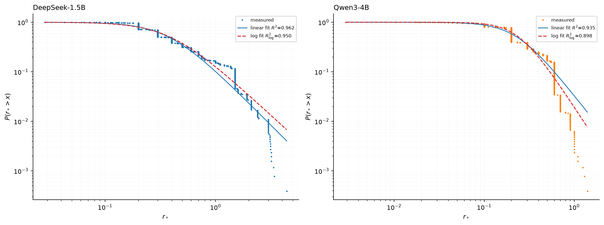
Fig. A1b — is the log-logistic fit as good as the $R^2$ says? Left: DeepSeek, right: Qwen3-4B; measured survival (dots), fit in linear $S$ (blue), fit in $\log S$ (red). Data: same as A1. Read: fitting in log space changes the parameters and improves Qwen2.5/Qwen3.5 ($R^2_{\log}=0.91$ vs $0.77/0.85$) but lowers DeepSeek slightly ($0.95$ vs $0.96$). A KS test on the measured radii rejects the log-logistic for every model ($D=0.16$–$0.32$). Conclusion: the fit is descriptive, not a law; the large $R^2$ in linear space is dominated by the large-$S$ region. This confirms your suspicion.

Fig. A2 — why $r_*$ is what it is. (a) $r_*$ against the margin at the controlling step $m_{t_*}$; (b) against the local sensitivity $s_{t_*}=|\delta m_{t_*}|/r$; (c) Pearson correlation $r(\log m_{t_*},\log r_*)$ per model. Data: same as A1. Read: $r_*=m_{t_*}/s_{t_*}$ by definition; margins explain most of the variance (correlation 0.8–0.98). Trivial: the identity is trivial; the measurement is that a few low-margin steps control the distribution.

Fig. A3 — fragility is decoupled from bulk gain. $r_*(u)$ against $G(u)=\|\delta h_L\|/r$ for every direction, per model; the title gives Pearson $r$ on $\log$–$\log$. Data: per-prompt A1/rstar runs, 20–1000 directions, $r=0.1$, $t=50$, last saved layer. Read: correlation is between $-0.1$ and $+0.1$; a direction can have large gain and be robust, or small gain and flip. Why: the decision gradient is one direction in $10^5$ dimensions; its alignment with the bulk singular directions is random. Not trivial for the claim “fragility = boundary crossing, not stretching”.

Fig. A4 — five steps decide most flips. Histogram of the controlling step $t_*=\arg\min_t r_c$ for every direction; title gives the share of the 5 most frequent steps. Data: as A1, first 120 generated tokens shown. Read: 89–97% of directions are decided by five steps. Consequence: the “smooth ECDF” is the order statistic of a few margins, not an attractor boundary.

Fig. B1 — the real depth gain. (a) $\mathrm{cum}_\ell=\log\sigma_1(J_\ell\cdots J_1)$ against normalized depth, median over 8–16 probe tokens and 8 directions; band = IQR over tokens. (b) Local gain $g_\ell=\langle\|J_\ell v_i\|\rangle_i$ against block. (c) $g$ in block 0, middle half, last 10%. Data: run_depth2.py/run_depth_big.py, Jacobian–vector products at one position, $k=8$; no perturbation radius. Read: product gain is $\times3.7$–$\times28$; block 0 is $3$–$17\times$; later blocks $0.98$–$1.13$. Block 0 contributes 85% of the log gain in DeepSeek-1.5B but only 2% in Phi-4. Trivial/not: the old “stretched decay” was $1/\ell$ by construction; the new numbers are the measured product.

Fig. B4 — every probe token. $\mathrm{cum}_\ell$ for every probe token (8–16 per model), all 8 models. Read: the shape is stable across tokens, the scale varies by up to $\times2$. Data need: 8–16 tokens is enough for a median but not for the tails; the new $k=32$ run is in results/update/depth_k32.
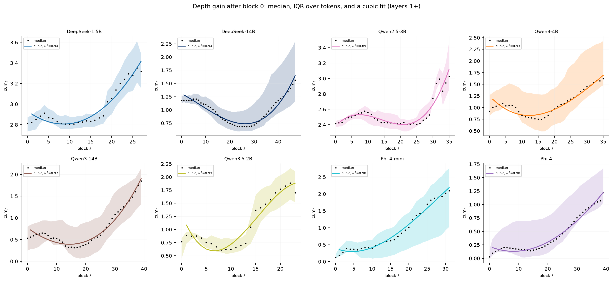
Fig. B4b — fit to the depth curve after block 0. Median $\mathrm{cum}_\ell$ (dots), IQR over probe tokens (band), and a cubic fit $\mathrm{cum}=a+b\ell+c\ell^2+d\ell^3$ over layers $\ell\ge1$ (solid). Data: same as B1. Read: the cubic is descriptive ($R^2=0.89$–$0.98$) but its coefficients are not a universal law. The one robust feature is positive curvature: the gain rises again in the last layers. This replaces the rejected $1+Ae^{-\ell/\tau_1}+B e^{(\ell-L)/\tau_2}$ fit, which forced a block-0 spike and did not describe Phi.
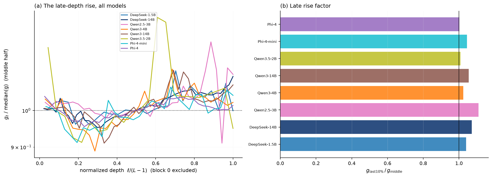
Fig. B4c — the late-depth rise on its own. (a) Local gain $g_\ell$ after block 0, divided by the median of the middle half, for every model. (b) The ratio $g_{\rm last10\%}/g_{\rm middle}$. Data: same as B1. Read: the ratio is 1.00–1.11; the rise is small but consistent for 7 of 8 models (Phi-4 is flat). Trivial/not: a 2–11% effect is not a dramatic law; it is a real, small regularity, and it is what makes a global fit curve upward.
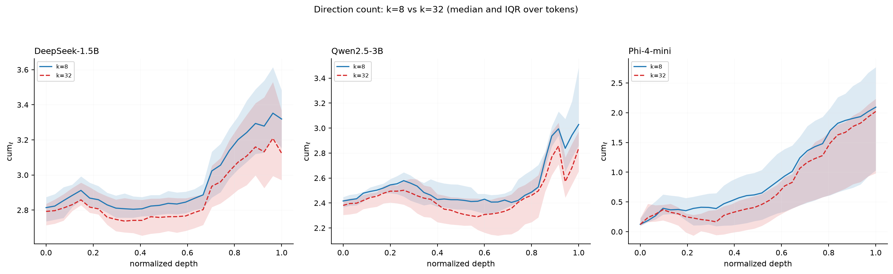
Fig. B4d — direction-count check. $\mathrm{cum}_\ell$ with $k=8$ (solid) and $k=32$ (dashed) tracked directions, median and IQR over tokens, for DeepSeek-1.5B, Qwen2.5-3B and Phi-4-mini. Data: results/depth2/* and new results/update/depth_*_k32. Read: the curves overlap within the token IQR; the direction count does not change the shape. This is the distribution check you asked for.

Fig. B5 — relative response. $\|\delta h_\ell\|/\|h_\ell\|$ at $t=50$, normalized at layer 1, against $\ell/(L-1)$ for all models; band = IQR over directions (small models). Definition: the numerator is the response norm, the denominator the baseline state norm; the ratio says whether the perturbation grows relative to the state. Read: only Phi-4-mini amplifies (×20); DeepSeek peaks at ×3 then declines; 14B models end at 0.33–0.43 of layer 1; Qwen3.5 is flat. Data: A1 fp32/fp16 as in the tier table; big models from the compact summaries.
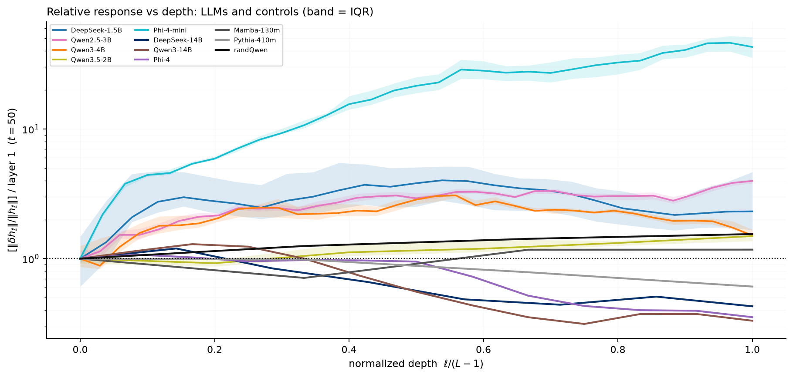
Fig. B5b — the same with controls. Relative response vs depth for every LLM and Mamba/Pythia/random, band = IQR over directions where available. Data: control A1 files (results/ctrl/*/a1i_txt), $r=0.1$, $t=50$, last saved layer; compact summaries in results_big_small/ctrl_*.npz. Read: Mamba and Pythia also stay within a factor 2 of 1; the random control is high and noisy. The relative response is not a transformer-specific signature; only Phi-4-mini clearly amplifies.
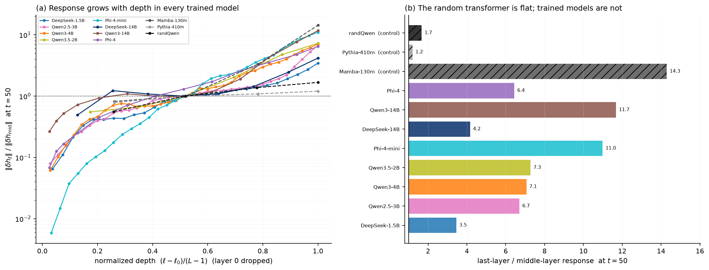
Fig. B6 — does the response grow with depth? (your observation, quantified, with controls). (a) $\|\delta h_\ell\|$ at $t=50$ normalized first to the layer-1 response and then to the middle-layer response, against normalized depth, for all 8 LLMs and the 3 controls; (b) last/middle ratio. Data: A1 compact summaries, $r=0.1$; 14B models are sampled at 9–14 layers. Read: every trained model rises by a factor 3.5–14 from mid to last layer (DeepSeek-1.5B 3.5, DS-14B 4.2, Qwen2.5 6.7, Qwen3-4B 7.1, Qwen3.5-2B 7.3, Qwen3-14B 11.7, Phi-4-mini 11.0, Mamba 14.3). The random transformer is flat (1.7) and Pythia is nearly flat (1.2). Interpretation: the late-depth amplification of the prompt perturbation is a property of the trained weights, not of the architecture — a randomly initialised transformer of the same shape does not have it, and Mamba (no attention) does. Caveat: the layer-1 response is small, so the first points of the normalized profile are noisy; the last/middle ratio in (b) is the robust number.
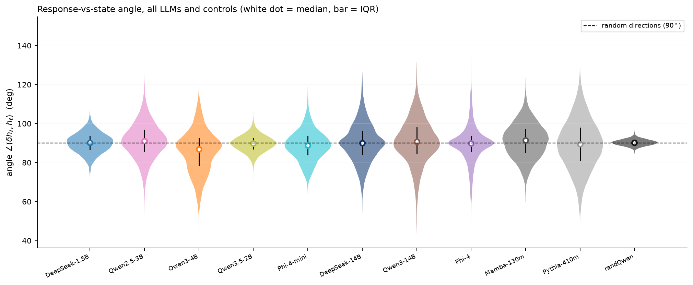
Fig. C1 — response-vs-state angle, all LLMs and controls. Violin of $\angle(\delta h_\ell,h_\ell)$ at the last saved layer, $r=0.03$; white dot = median, vertical bar = IQR. Data: 64 directions for the small models (32 for controls) × 200–300 tokens; 24 directions for the 14B models. Read: medians 86.8°–91.4° for every model, including Mamba, Pythia and the random transformer. The spread is model-dependent, but the median is not discriminative. Trivial/not: the median 90° is the high-dimensional null; the response angle cannot separate trained models from controls.
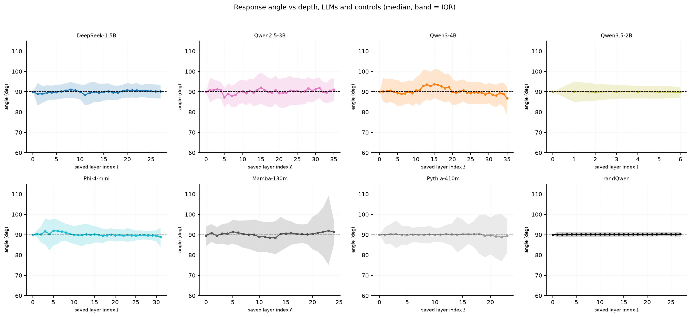
Fig. C2 — angle vs depth, LLMs and controls. Median (band = IQR over directions/tokens) at every saved layer. Read: the angle stays near 90° at every layer for every model, including the controls. Use: this is the honest version of “the response is almost tangential”; the radial component is the measured part (Fig. C1), not the median angle.
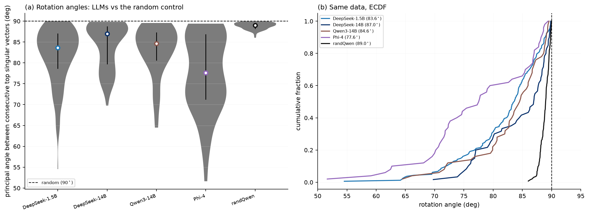
Fig. C3 — rotation of the amplification direction, with a control. (a) Violin of the principal angle between top singular vectors of consecutive block Jacobians; white dot = median, bar = IQR. (b) ECDF of the same. Data: nonnorm.npz for DeepSeek-1.5B/14B, Qwen3-14B, Phi-4 and the random transformer (5 tokens × saved layers). Read: trained models rotate by 78–87°; the random control is 89°; random directions are 90°. The trained models are measurably more aligned than random, but the effect is modest. Why this matters: every block can amplify ($\sigma_{\max}>1$), but the amplified direction changes from block to block, so a fixed vector sees the small common gain. The quantitative product comparison is in §K and in the earlier C3 panels (kept in update_figures/pack_rotation_composition.png).
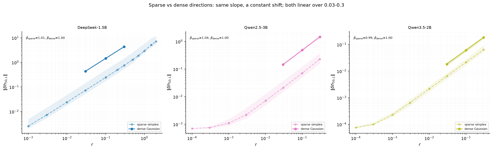
Fig. C4 — sparse vs dense directions: the correct reading. Absolute response $\|\delta h_{50,L}\|$ against $r$ for sparse simplex (dashed) and dense Gaussian (solid) directions, with IQR bands over directions. Data: fp32 runs results/update/fp32_* (sparse, 8 radii) and results/update/dense_* (dense, 3 radii, 128 dirs). Read: both ensembles are linear ($\beta\approx1$) over $r=0.03$–$0.3$; dense is a constant factor 3–10× higher at the same $r$. The sparse curve is not saturating in this interval; my earlier claim that it was came from comparing the old fp16 sparse runs to the new fp32 dense runs. Below $r\approx10^{-3}$ the sparse response hits the fp32 subtraction floor. Consequence: direction sparsity changes the scale of the response, not the exponent; the old $r_*$ values at $r=0.1$ are still probe-dependent because $r_*$ depends on $\delta m$, not $\delta h$.
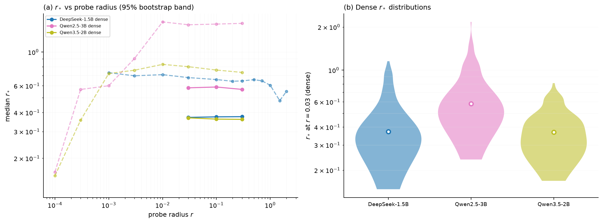
Fig. C5 — comparable fragility. (a) $r_*$ against probe radius, sparse (dashed) and dense (solid), 95% bootstrap band over directions; (b) dense $r_*$ distributions at $r=0.03$. Data: 128 dense directions, radii 0.03/0.1/0.3; Phi-4 dense from the Spark run (64 dirs, 4 radii). Read: dense $r_*$ is radius-independent: DeepSeek 0.37, Qwen3.5 0.36, Qwen2.5 0.58, Phi-4 1.21–1.28. Sparse $r_*$ moves with the probe radius. This is the number to compare across models. The dense distributions are broad and overlap; the medians differ by less than a factor 2 among the small models, and Phi-4 is about 2× more robust than Qwen2.5.
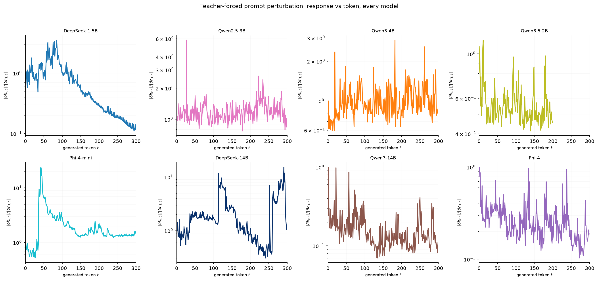
Fig. D1 — response vs token, every model. $\|\delta h_{t,L}\|/\|\delta h_{1,L}\|$ for a teacher-forced prompt perturbation, median over directions, last saved layer. Data: A1 runs; $r=0.1$ (Phi-mini 0.03), 300 tokens. Read: DeepSeek-1.5B decays to 0.2 by 300; Qwen2.5/Qwen3-4B/Phi-mini plateau; the 14B models plateau or decay slowly; none grows exponentially. Precision: the fp16 models' absolute values are floor-dominated; only the shape is meaningful.
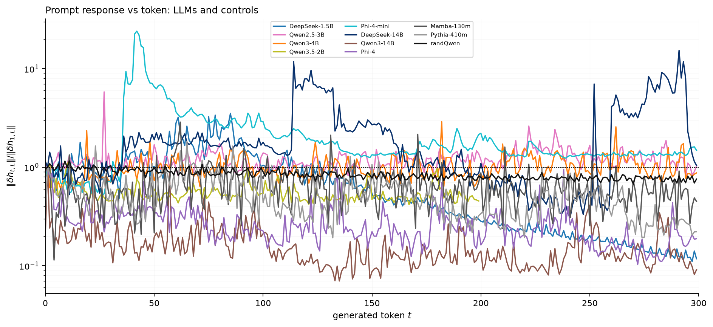
Fig. D1b — the same with controls. All 8 LLMs plus Mamba-130m, Pythia-410m and the random transformer, last saved layer, normalized at $t=1$. Data: A1/compact runs and results_big_small/ctrl_*.npz, $r=0.1$, 300 tokens. Read: the controls lie inside the LLM band; Mamba and Pythia decay or stay flat; the random control is noisier and starts high. No system grows. Use: this is the figure that answers “missing controls” for the time series.

Fig. D2 — network-only replay vs controls. Same quantity for a replay run (the model is fed the recorded token stream) for three LLMs and three controls. Data: results/softloop/*/T1e-9/replay, 600 steps, 8–32 directions. Read: all six curves are flat or decaying; Mamba (no attention) carries the response as well as the transformers; Pythia decays; the random control starts high and stays high. Not trivial: it shows attention is not required to carry a perturbation; it is required for the long-range transport (Fig. I1).
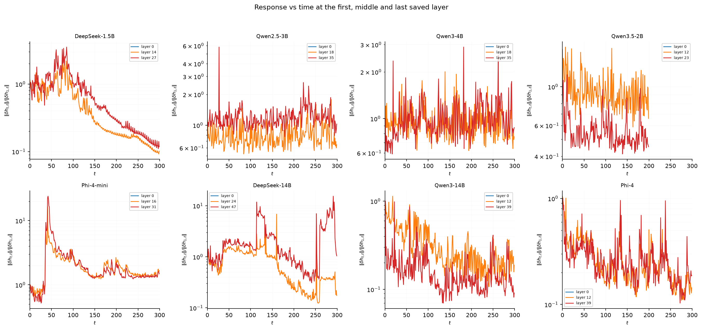
Fig. D3 — first/middle/last layer. Same as D1 at the first, middle and last saved layer. Read: in DeepSeek the shallow layers flush first and the deep layers persist; in Qwen/Phi the layers move together.
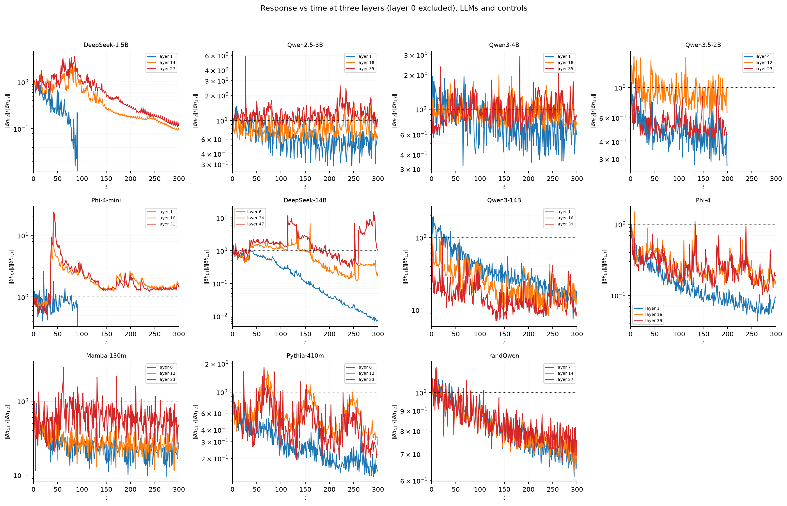
Fig. D3b — layer-resolved response with controls. Three layers (excluding layer 0), every LLM and control. Data: same as D1b. Read: the ordering of the layers is the same in the controls: deep layers retain more; no layer grows exponentially. Use: this is the requested “one plot for different layers, with controls”.
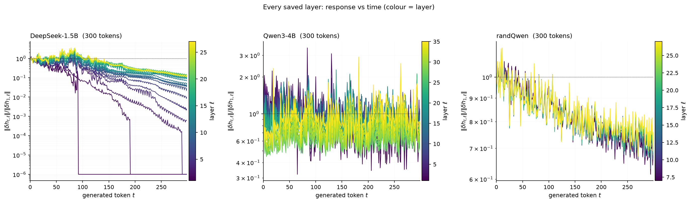
Fig. D3c — all saved layers, three examples. Response vs time for every saved layer of DeepSeek-1.5B, Qwen3-4B and randQwen; colour = layer (colourbar). Data: A1/control summaries, $r=0.1$, 300 tokens. Read: the shallow layers decay fastest and the deep layers plateau; every layer overlaps in randQwen. No layer grows. Each model has its own panel below (D3d–D3n).
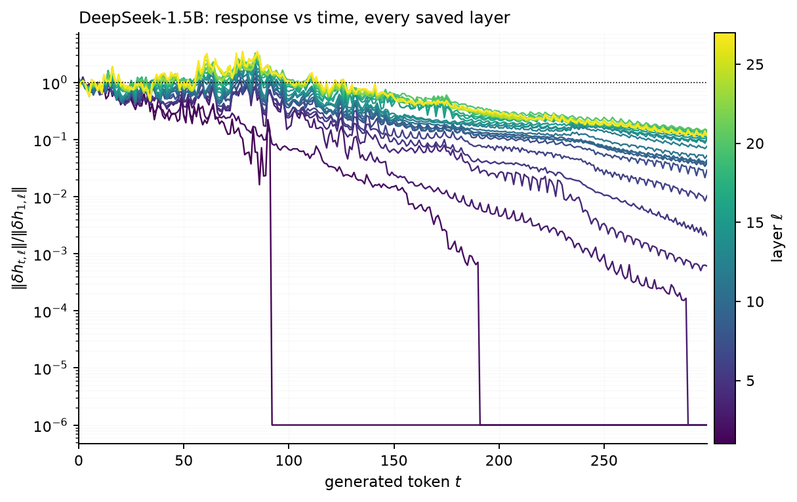
Fig. D3d — DeepSeek-1.5B, every layer. Layer colourbar on the right. Read: layers 7–21 flush toward 0.1–0.3; the last layer stays highest at ≈0.2–0.5. The layer ordering is monotone: deeper = more persistent.
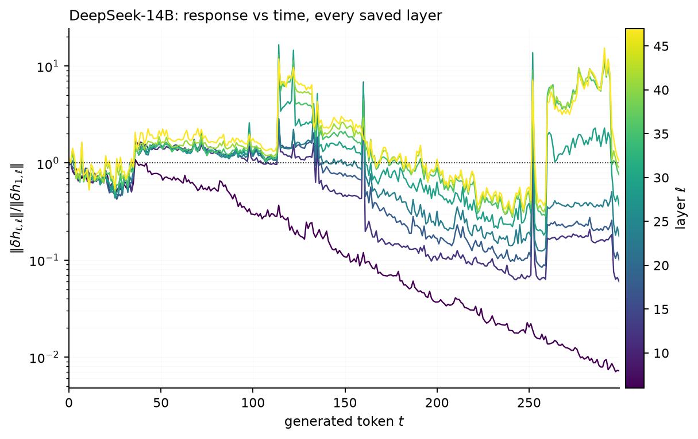
Fig. D3e — DeepSeek-14B, every layer (9 saved layers, 300 tokens). Read: same ordering as the 1.5B; the spread between shallow and deep is smaller.
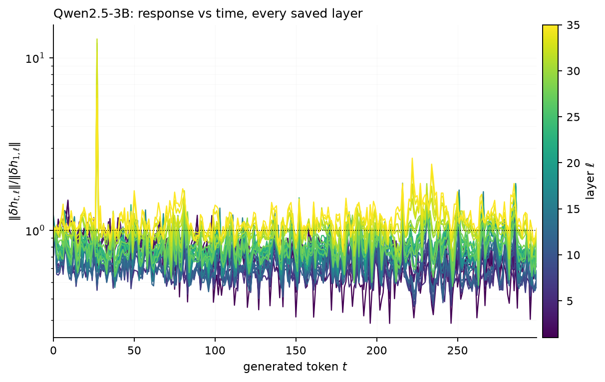
Fig. D3f — Qwen2.5-3B, every layer. Read: monotone persistence with depth; the last layer stays at ≈0.5.
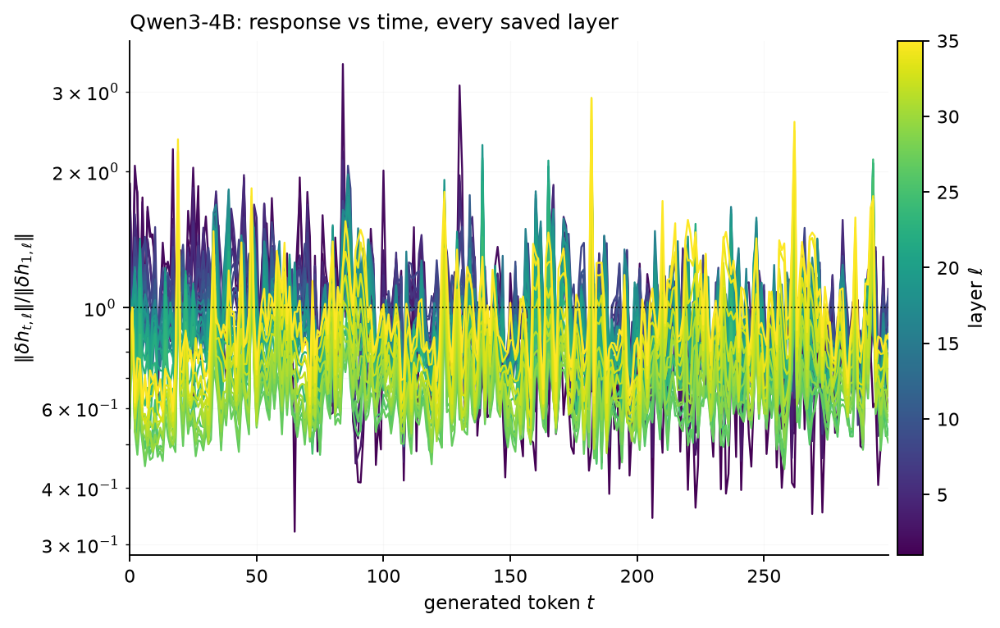
Fig. D3g — Qwen3-4B, every layer. Read: all layers stay within a factor 2 of each other; no layer amplifies over time.
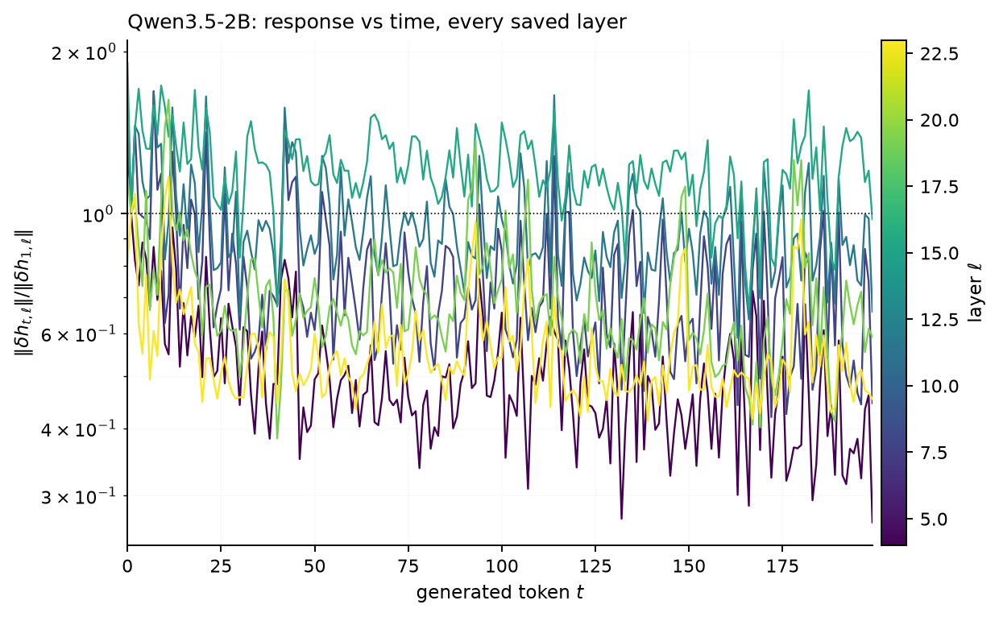
Fig. D3h — Qwen3.5-2B, every layer (7 saved layers). Read: the deepest layer sits above the rest by ×2, the ordering is otherwise flat.
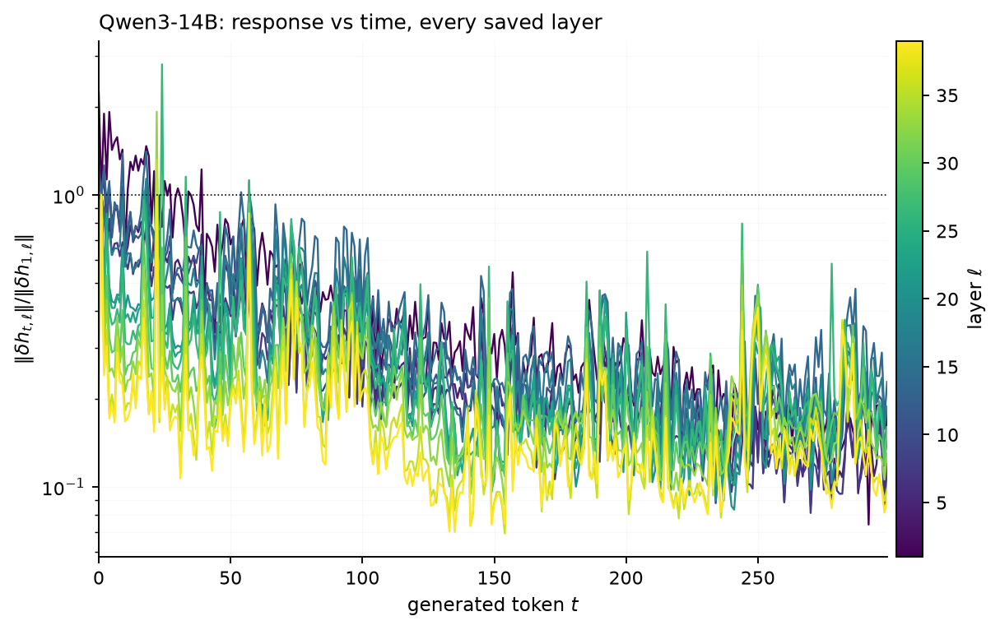
Fig. D3i — Qwen3-14B, every layer. Read: the clearest monotone depth ordering of the 14B models; the last layer stays at ≈0.8.
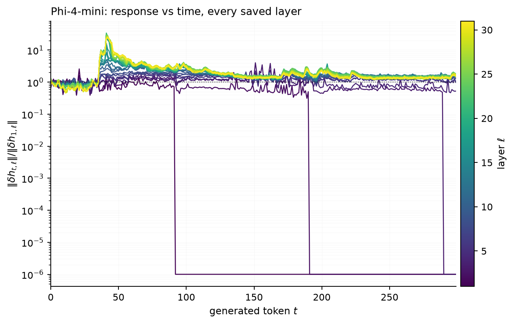
Fig. D3j — Phi-4-mini, every layer. Read: an initial rise (this is the model that amplifies relative to its own state norm, Fig. B5), then a slow decay; the deepest layer is highest.
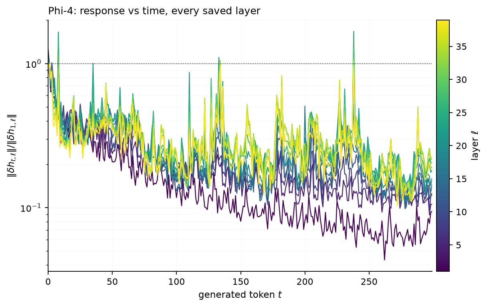
Fig. D3k — Phi-4, every layer. Read: shallow layers decay fast, deep layers stay near 1: the same depth trend as the rest.
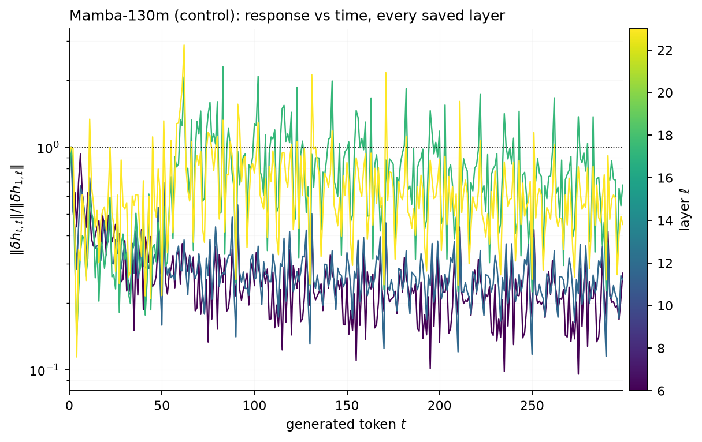
Fig. D3l — Mamba-130m (control), every layer. Read: deeper layers persist more than shallow, exactly as in the transformers — “deeper responds more” is not a transformer-specific property.
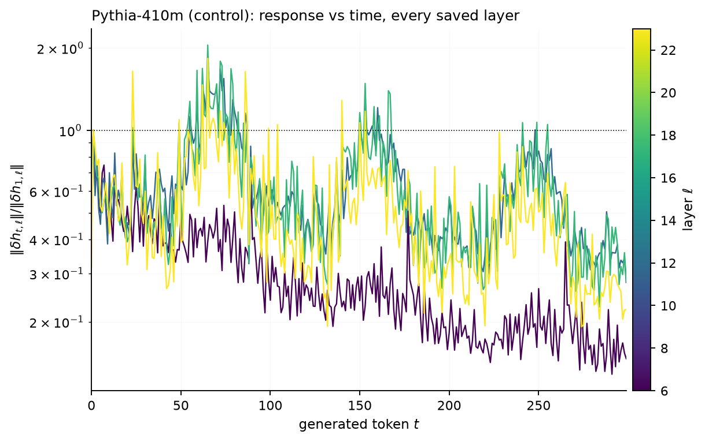
Fig. D3m — Pythia-410m (control), every layer. Read: all layers decay to ≈0.05; the depth spread is the smallest of all models, consistent with its near-flat last/middle ratio (1.2, Fig. B6).
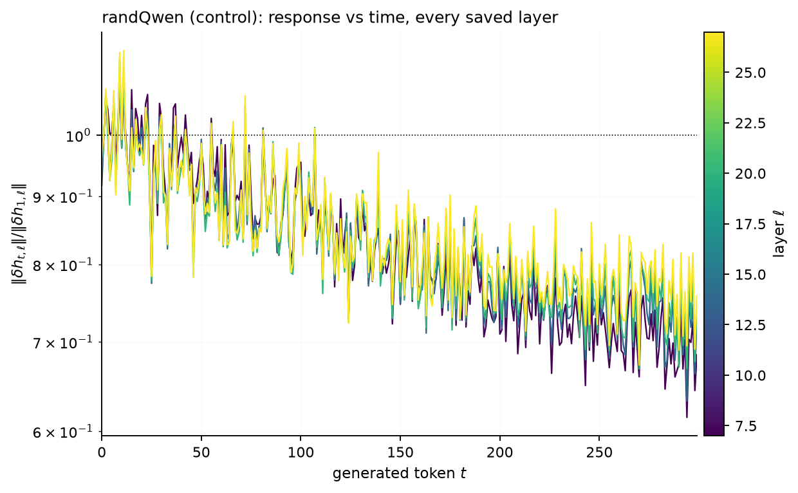
Fig. D3n — randQwen (control), every layer. Read: this is your observation, quantified: all layers collapse onto a single band (0.6–1.1) that decays together, with no depth ordering. The trained models' monotone depth ordering (D3d–D3m) is therefore a property of the learned weights, not of the architecture or of depth per se.
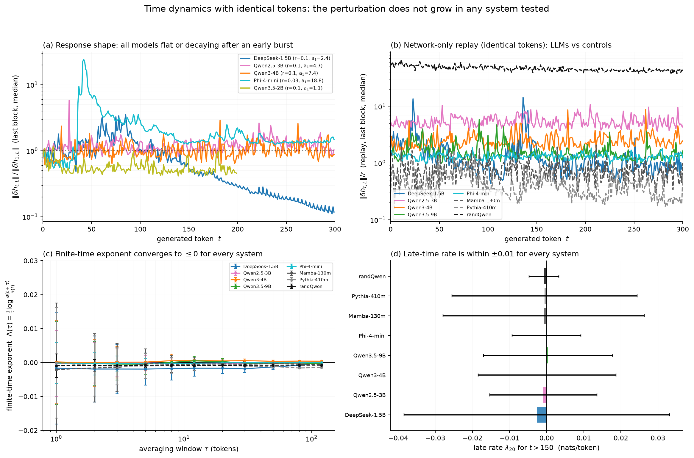
Fig. D4 — finite-time exponent. (a) Response shape normalized; (b) replay vs controls; (c) $\Lambda(\tau)=\frac1\tau\log(a_{t+\tau}/a_t)$ against $\tau$ with error bars; (d) late rate $\lambda_{20}$. Data: A1 + replay. Read: $\Lambda(\tau)$ converges to $\le0$ for every system; no positive plateau. Trivial/not: the late-rate values are all within $\pm0.01$; the measurement is that a positive rate does not survive averaging. Controls: Mamba $-0.0008$, Pythia $-0.0019$, random $-0.0007$.
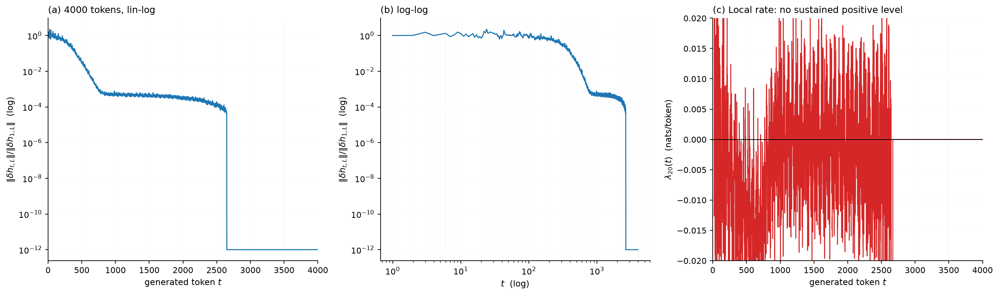
Fig. D5 — 4000-token horizon, rebuilt from raw data. (a) Response vs $t$ on a lin–log axis; (b) log–log; (c) local 20-token rate. Data: results/local_data/a1_4k_test.npz, 2 directions, 4 layers, $r=0.1$, last layer. Read: the response decays and fluctuates around a small floor; no sustained positive rate. Trivial/not: the decay is not a clean exponential; the measurement is that it never grows.
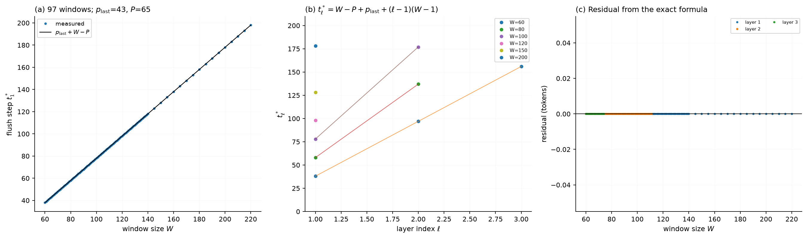
Fig. E1 — the exact window formula. (a) Flush step $t^*_1$ vs $W$ for 97 windows; the line is $p_{\rm last}+W-P$, where $p_{\rm last}=43$ is the last prompt position carrying a nonzero perturbation and $P=65$. (b) $t^*_\ell$ vs layer for several windows; lines are $t^*_\ell=W-P+p_{\rm last}+(\ell-1)(W-1)$. (c) Residual from that formula: zero to the token for every measured layer/window. Data: results/local_data/wspec/w*/a1.npz, 106 windows $W=60$–$265$, 7 layers, 4 directions, 200 tokens. Read: the law is exact, not fitted. The constant is not mysterious: $t^*_1-p_{\rm last}-W+P=0$; my earlier “$W-22$” is just $p_{\rm last}-P=-22$. The perturbation support is sparse, so only positions up to $p_{\rm last}$ are perturbed.
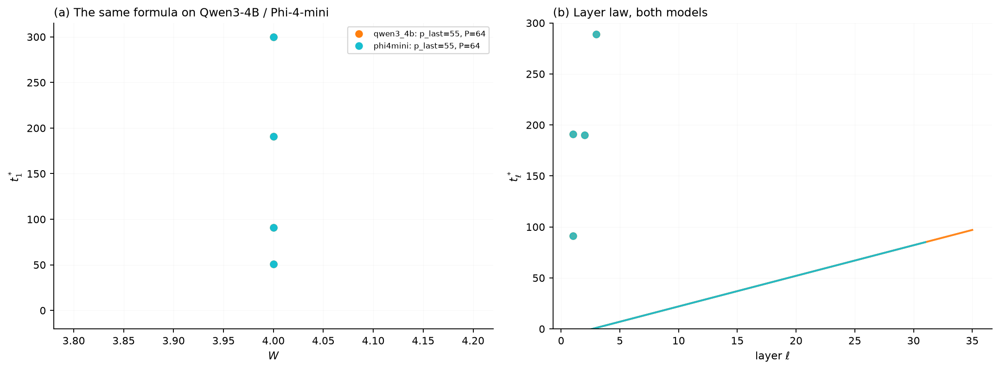
Fig. E1b — the same formula on Qwen3-4B/Phi-4-mini. (a) $t^*_1$ vs $W$; (b) $t^*_\ell$ vs layer. Data: window4d/*/w*/a1.npz; $p_{\rm last}=55$, $P=64$. Read: both models follow the same law with their own $p_{\rm last}$. Interpretation: the perturbation does not vanish at $W-P$; the last perturbed generated token carries it, and each layer adds one window of memory.

Fig. E2 — the same law on Qwen3-4B/Phi-4-mini, and why it cannot be resolved here. (a) $t^*_\ell$ vs layer at $W=100$; (b) three windows; (c) the $(\ell,W)$ map, colour = $t^*_\ell$ (colourbar added). Data: window4d/*/w*/a1.npz, 11 saved layers, 6 directions, $r=0.1$, 300 generated tokens. Read: with $P=64$ and $p_{\rm last}=55$, the law predicts $t^*_1=W-9$ and $t^*_\ell=t^*_1+(\ell-1)(W-1)$; at $W=100$ that is already $t^*_2=190$ and $t^*_3=289$, so every layer above the first hits the 300-token run length — that is the flat top in (a)/(b) and the saturated cells in (c). Only the first layer and the smaller windows are measurable here, and they obey the law exactly. The two-model layer-resolved test is therefore done on DeepSeek-1.5B, where 106 windows and smaller $W$ keep $t^*_\ell$ inside the window (E1, E1b). This panel set is kept for completeness; E1b is the figure to cite.
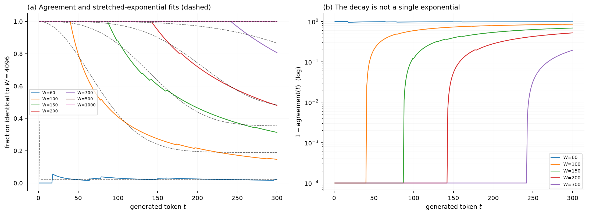
Fig. E3 — token agreement and its fit (onset excluded). (a) Fraction of tokens identical to $W=4096$ for each window, with a stretched-exponential fit $f_\infty+(1-f_\infty)e^{-(t/\tau)^\beta}$ (dashed) started at the first token where the agreement drops below 1 (dotted vertical line), not at $t=0$. (b) $1-\mathrm{agreement}$ on a log axis. Data: 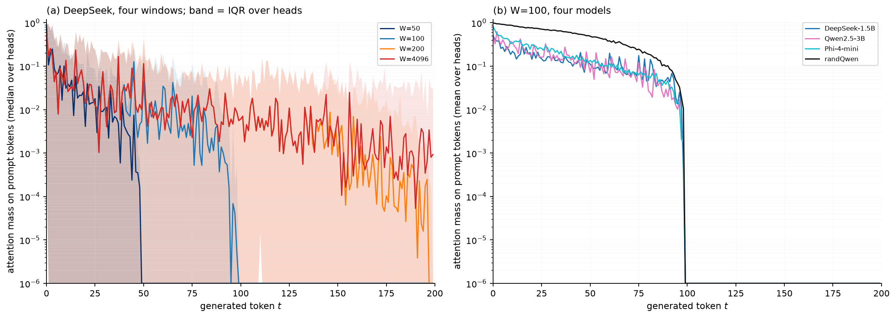results/window_tokens/tokens.npz, 8 windows, 300 tokens, no perturbation. Read: the onset of disagreement is exactly $t_{\rm onset}=W-P$ (35, 85, 135, 235 for $W=100,150,200,300$, $P=65$) — the same clock as the flush law. The decay after onset is stretched-exponential with $\beta\approx1.7$–$4$ and $\tau\approx90$ ($W=100$), $162$ ($W=150$), $218$ ($W=200$). Why the earlier fit looked wrong: it was fitted from $t=0$, through the flat plateau, which dragged $f_\infty$ and $\tau$; excluding the plateau fixes the shape. $W=60
Fig. E4 — measured attention mass on the prompt. (a) DeepSeek, four windows, median over heads (band = IQR over heads); (b) $W=100$, four models. Data: run_attention_frac.py with the correct 4-D window mask, 200 generated tokens, layers 0/7/14/21/27. Read: at $t=0$ the mass is high (0.9); it decays as the model shifts to generated tokens. For $W=100$ it drops sharply at $t\approx99$, when the last prompt token (position 64, perturbed or not) leaves the window. The response flush is earlier, at $t^*_1=p_{\rm last}+W-P=43+100-65=78$, because only the perturbed prompt positions (up to $p_{\rm last}=43$) matter. With $W=4096$ there is no mask cut; the mass decays gradually and never reaches zero in 200 tokens. This is the real version of the old schematic “attention weight fraction” panel, and it resolves the apparent contradiction with the window formula.
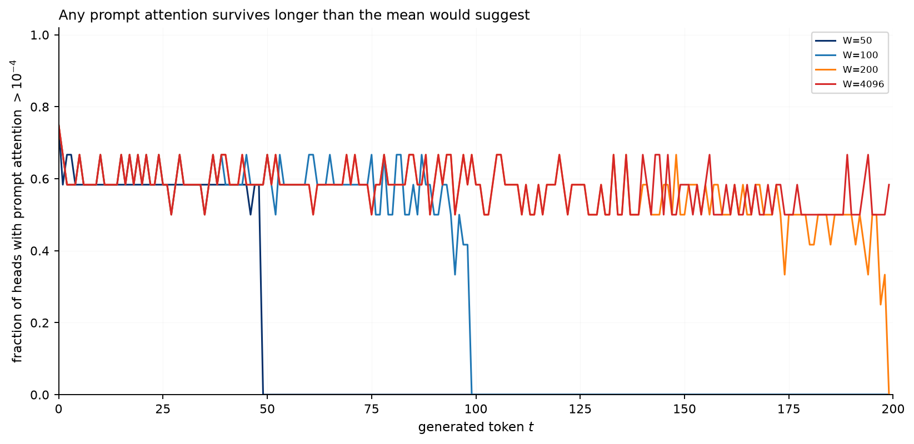
Fig. E4b — any head still attending. Fraction of heads with prompt attention $>10^{-4}$ vs $t$, DeepSeek, four windows. Read: a small number of heads keep a trace of the prompt longer than the mean suggests; for $W=4096$ some heads still attend at $t=200$. Why this does not contradict the formula: the formula is about the response at layer 1 becoming exactly zero when no perturbed token is in the window; it is not a statement about the total prompt-attention mass.
This section is written to be unambiguous. Every mode below is the same forward pass with the same weights, batch layout and prompt; they differ only in what is fed in at the next position.
One run processes a batch of $K+1$ rows in parallel:
A step is one generated position, i.e. one forward pass that produces the logits for the next token. There is no separate notion of "layer steps"; layers are inside the forward pass.
E_prompt = embed(prompt_ids) # (P, d)
E_rows = E_prompt.repeat(K+1, 1, 1)
E_rows[1:] += r * direction_k # perturb rows 1..K only
fed[0] = last prompt embedding # start of the generated sequence
for t in 0 .. T-1:
z = model(fed[0..t])[:, -1, :] # (K+1, V) logits at position t
p = softmax(z / T) # (K+1, V)
e_ref[t] = fed[0][t] # what row 0 actually received
fed[t+1] = RULE(p, e_ref[t], t) # <-- the ONLY difference between modes
| mode | RULE: what every row feeds at the next position |
what it is |
|---|---|---|
| soft (closed loop) | $e = \sum_v p_k(v)\,E_v$ — row $k$ feeds its own expected embedding | mean feedback from its own distribution |
| replay (network only) | $e = e_{\rm ref}[t]$ — the recorded input of row 0 | the feedback is removed; only the prompt perturbation remains |
| CRN | sample one token $v^\*$ from $p_0$ (the reference row), feed $E_{v^\*}$ to every row | hard token, sampling noise identical across rows |
| independent | each row samples its own token $v_k\sim p_k$, feeds $E_{v_k}$ | ordinary sampled generation |
| teacher forcing (A1) | hard token ids from a greedy run, fixed in advance | no feedback, no sampling at all |
What "readout" means. The readout is the map from the last hidden state to the vocabulary: $z=W_U\,\mathrm{norm}(h_L)+b$ (the unembedding). "The instability lives in the readout" means: the hidden perturbation $\delta h_L$ is harmless by itself; it matters because it changes $z$, hence $p$, hence (in the soft loop) the vector $e$ that is fed at the next position. The readout is the gate through which a hidden perturbation re-enters the input stream. "Gate open" ($m_t What each control removes, and what it therefore licenses you to conclude: Note the axes are independent: what is fed (expected embedding vs token), where it comes from (own row vs reference), and how it is chosen (mean vs sampled). The closed soft loop is the only cell that has all three of: own row, expected embedding, deterministic mean. Do we compare against non-looped autoregressive / teacher-forced generation? Yes — that is the whole D series: A1 feeds the model a fixed greedy token stream (teacher forcing) and perturbs only the prompt; it never loops. Replay is its soft-token analogue. The claim "autoregressive and teacher-forced generation do not amplify" is exactly those runs; the loop runs are the contrast. 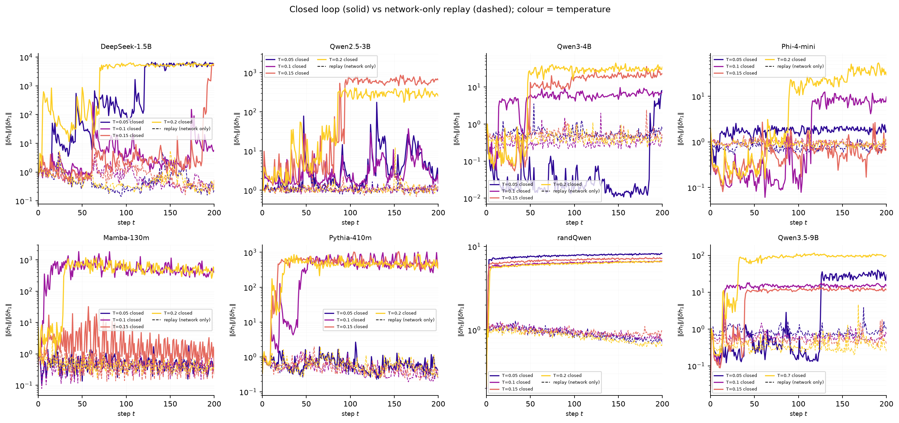
comparison
difference
if the loop grows and this does not, you learn
soft vs replay
where the fed vector comes from (own distribution vs frozen reference)
the growth needs the perturbation to reach the readout and to change the input; the network alone is innocent
soft vs CRN
mean feedback vs one hard token shared by all rows
the growth is not caused by the sampling of a token; it needs the mean (the full distribution)
CRN vs independent
shared vs per-row sampling noise
whether sampling noise alone can separate rows (it can, but only to $O(1)$, not $10^2$)
soft vs teacher forcing
closed feedback vs a fixed greedy token stream
the same contrast as replay, but with hard tokens at every $T$ — this is the standard "autoregressive generation" baseline
Fig. F1 — the closed loop vs the replay, all temperatures (old 200-step version, kept). Response for the soft loop (solid) and the replay (dashed), colour = temperature. Read: closed loops grow by $10^2$–$10^4$; replays stay at 1 or decay. Superseded by F2 below (3000 steps, matched pairs, per-direction bands).
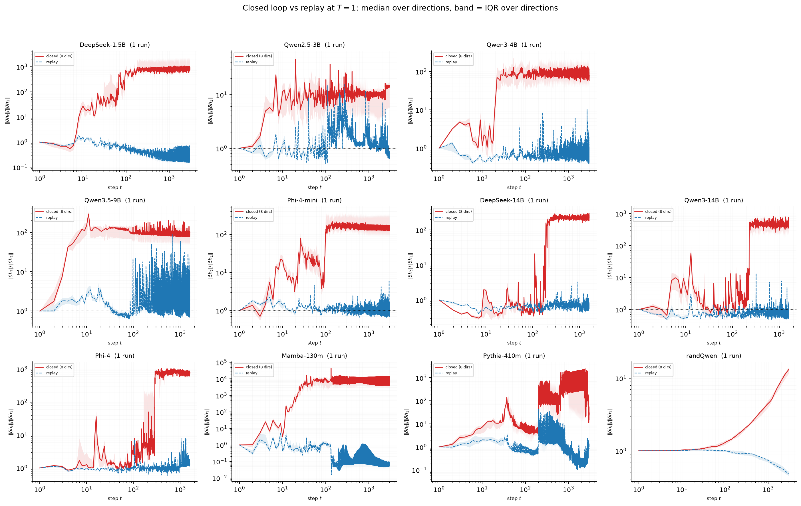
Fig. F2 — closed loop vs replay, every model, $T=1$, 1600–3000 steps. Median over directions (solid = closed, dashed = replay), band = IQR over directions, log–log. Data: results/longloop/* (8 dirs) plus results/longloop_v3/* (256 dirs, arriving); the code pools every matched loop/replay pair and reports how many directions it used. Read: the closed loop rises by $10^1$–$10^4$ and saturates; the replay decays to $0.03$–$1$. Every trained model does this; the random control does it too, but 2–3 orders of magnitude less and without saturation inside the run. Note the first point is exactly 1 — both curves are normalised at $t=1$, so the earlier apparent offset was a smoothing artefact and is fixed (no smoothing is applied here).
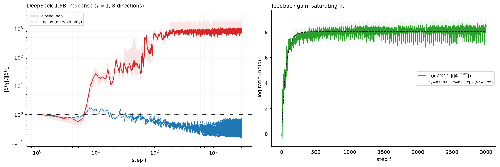
Fig. F2b — one model in full: DeepSeek-1.5B. Left: response, closed vs replay, with IQR over directions. Right: the feedback gain $L(t)=\log(a_{\rm closed}/a_{\rm replay})$, computed per direction and then summarised (green = median, band = IQR over directions), with the fit $L(t)=L_\infty(1-e^{-t/\tau})$. Read: $L$ starts at exactly 0 (both curves are 1 at $t=1$), rises with $\tau\approx56$ steps, and saturates at $L_\infty=7.8$ nats ($\times2400$). About the fit: there is no free offset $y_0$ — it is 0 by construction, and allowing it only absorbs the first few points. The estimated parameters are $L_\infty$ (how much) and $\tau$ (how fast); $R^2$ is reported.
The same figure for every model — the per-model versions are pack_loop_<tag>.png in update_figures/: DeepSeek-1.5B (above), Qwen2.5-3B, Qwen3-4B, Qwen3.5-2B, Qwen3.5-9B, Phi-4-mini, DeepSeek-14B, Qwen3-14B, Phi-4, Mamba-130m, Pythia-410m, randQwen. They all have the log-ratio panel now (the earlier missing panels were a directory-matching bug, fixed by pairing each loop with the replay from the same directory).
| model | directions | steps | $L_\infty$ (nats) | $\tau$ (steps) | $R^2$ | $\times$ at end |
|---|---|---|---|---|---|---|
| Mamba-130m | 8 | 3000 | 11.3 | 32 | 0.41 | 12 400 |
| DeepSeek-1.5B | 16 | 3000 | 7.8 | 56 | 0.92 | 2 400 |
| DeepSeek-14B | 8 | 1600 | 6.0 | 209 | 0.77 | 220 |
| Qwen3-14B | 8 | 1600 | 6.5 | 228 | 0.77 | 600 |
| Phi-4 | 8 | 1600 | 6.7 | 255 | 0.77 | 530 |
| Phi-4-mini | 8 | 3000 | 5.3 | 60 | 0.69 | 173 |
| Pythia-410m | 8 | 3000 | 6.4 | 357 | 0.48 | 85 |
| Qwen3-4B | 16 | 3000 | 4.8 | 17 | 0.46 | 76 |
| Qwen3.5-9B | 40 | 1600 | 2.4 | 2 | 0.02 | 35 |
| randQwen | 8 | 3000 | 3.8 | 1480 | 1.00 | 13 |
| Qwen2.5-3B | 16 | 3000 | 1.3 | 5 | 0.06 | 15 |
| Qwen3.5-2B | – | – | – | – | – | (fp16 cuDNN failure; fp32 run queued) |
The $R^2$ column matters: for Qwen2.5-3B, Qwen3-4B and Qwen3.5-9B the growth is not a clean saturating exponential (they jump in a few steps), so $L_\infty$ and $\tau$ are only indicative there.
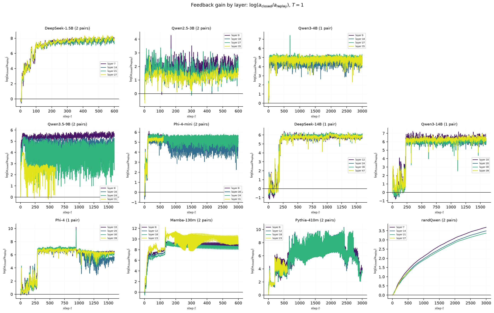
Fig. F2c — the same gain, layer by layer. $L(t)$ computed at each saved layer (first, middle, last, plus intermediates). Read: for the transformer LLMs the curves lie on top of each other — the feedback amplification is depth-independent. That is what you expect if the perturbation is re-injected at the input of each step and then carried through the same stack: every layer sees the same injected offset. Mamba, Pythia and the random control are the exceptions (their layers separate). Consequence for the paper: the loop instability is a token-level effect, not a layer-level one; "where in the stack" is the wrong question for the loop (it is the right question for the prompt perturbation, §B).
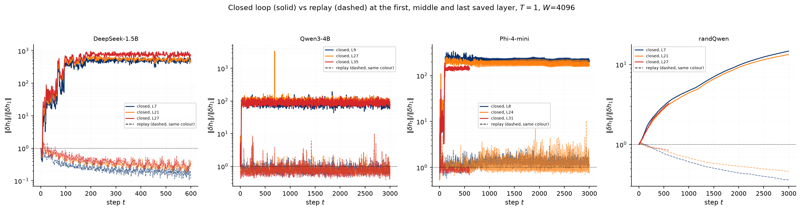
Fig. F2d — the closed-loop response at the first, middle and last saved layer (the loop analogue of D3b). Solid = closed loop, dashed = replay, colours = layers, $W=4096$. Read: same message as F2c: all layers move together. Qwen3-4B and Phi-4-mini show a brief overshoot at the earliest layer, then collapse onto the common curve.
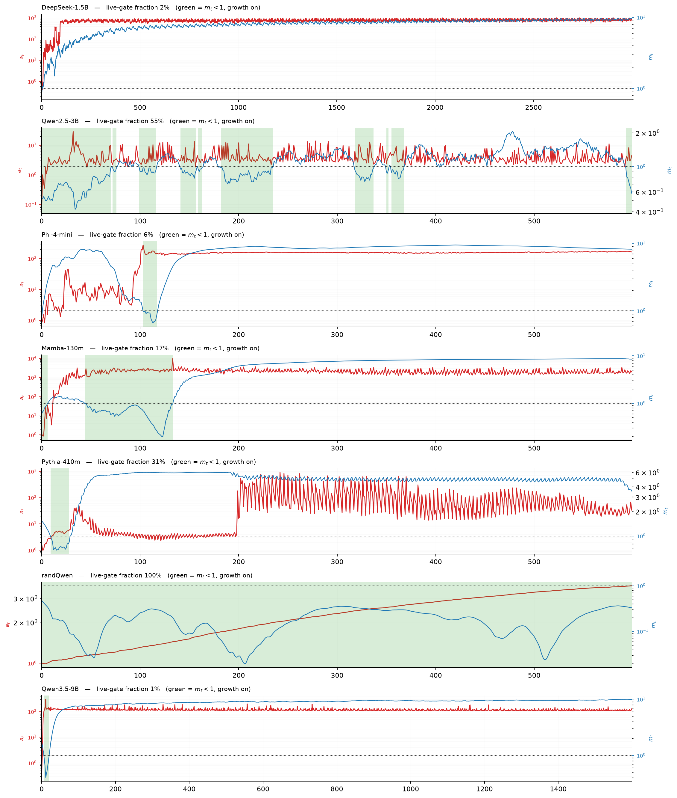
Fig. F3 — the gate picture (no shading now). Red, left axis: response $a_t$; blue, right axis: the reference row's top1$-$top2 margin $m_t$ (21-step median), $T=1$. Read: growth happens while $m_t\lesssim T$; when the margin rises above $T$ and stays there, the growth stops. DeepSeek-1.5B: rises for ~300 steps, then the margin sits at ≈10 nats and $a_t$ is flat for 2700 steps. Phi-4-mini and Mamba lock in after a single episode. The random control never locks in (margin 0.09 nats), which is why it is the only model whose gain keeps growing over the whole 3000 steps. Important caveat: the gate state predicts when growth happens, but it does not undo growth that already happened — see F3b.
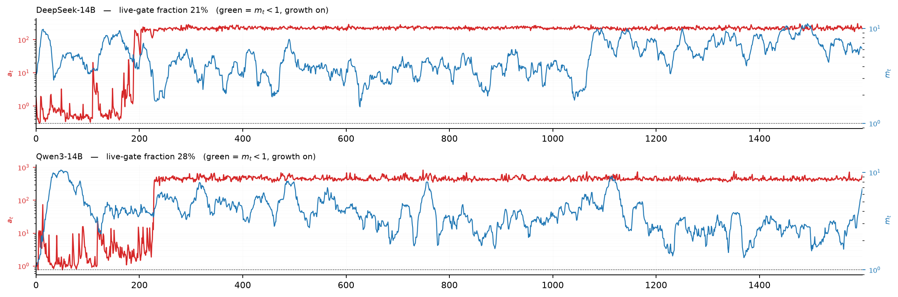
Fig. F3b — the same at 14B. Read: a single gate episode at $t\approx200$ lifts the response to $\times200$–$350$ and it stays there for the remaining 1400 steps, even though the margin later falls below $T$ many times. So the amplified state is not undone when the gate reopens; the orbit has moved to a different self-consistent trajectory and the perturbation rides at that trajectory's amplitude. I previously called this a "one-shot ratchet"; plain language: the loop switches to a different regime and stays there.
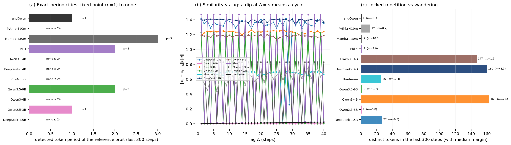
Fig. F4 — what the loop generates once it saturates. (a) exact token period of the reference orbit over the last 300 steps ($p=1$ = the same token forever, "none" = no period ≤ 24); (b) $\|e_t-e_{t-\Delta}\|$ vs lag — dips at $\Delta=p$ are cycles; (c) number of distinct tokens in the last 300 steps, with the median margin. Data: top1_ref and e_ref saved by run_softloop.py; decoded with each model's tokenizer (results/loop_repetition_tokens.json). Read:
| model | period | what it repeats (decoded) | distinct tokens |
|---|---|---|---|
| Qwen2.5-3B | 1 (fixed point) | " propulsion" ×100 |
1 |
| randQwen | 1 (fixed point) | "orse" ×100 |
1 |
| Mamba-130m | 3 | "\nA\n" |
2 |
| Phi-4 | 2 | "acja uw" |
2 |
| Qwen3.5-9B | 2 | ":\n\n" |
2 |
| Phi-4-mini | none ≤24 | repeats a 40-token paragraph: "…The current propulsion systems for interstellar travel are still in development, but they have the potential to revolutionize our understanding of the universe…" | 26 |
| DeepSeek-1.5B | none ≤24 | re-writes the prompt's instruction: "…in terms of safety, technological, and other factors. Also, if you can, include a discussion of the potential benefits of each propulsion system…" | 27 |
| Qwen3-4B | none | keeps writing coherent text: "4. Communication and Control — 20-year round-trip to Proxima → no real-time control…" | 163 |
| DeepSeek-14B | none | coherent-ish markdown summary, mildly degenerate | 160 |
| Qwen3-14B | none | semi-coherent, drifting | 147 |
| Pythia-410m | none | newlines and punctuation | 12 |
So "the loop saturates because it repeats" is only half true. Seven of eleven models collapse to a token fixed point or a short cycle ($p\le3$); the others keep producing text (Qwen3-4B even coherent text) while the gain still saturates. The saturation is therefore not caused by literal repetition; both are consequences of the orbit landing on a self-consistent trajectory. If you want one sentence for the paper: the closed loop is a dissipative system that converges to an attracting orbit (often a token cycle); the perturbation saturates at the size of the offset between the perturbed and reference orbits on that attractor.
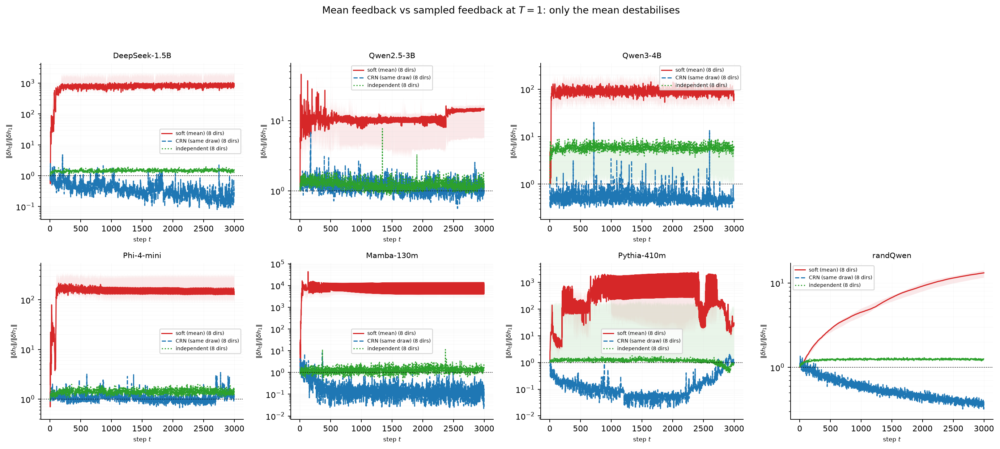
Fig. F5 — mean feedback vs sampled feedback, 3000 steps. Soft (mean, red), CRN (same sampled token for every row, blue), independent (green). Read: soft grows by $10^1$–$10^4$; CRN stays at or below 1 (0.03–1.3); independent stays within 0.8–6. Conclusion: the instability is produced by the mean feedback — by feeding the full distribution back — not by the fact that a token is sampled. CRN is the clean control: every row receives the identical token stream, so any difference between rows is pure state dynamics, and there is none.
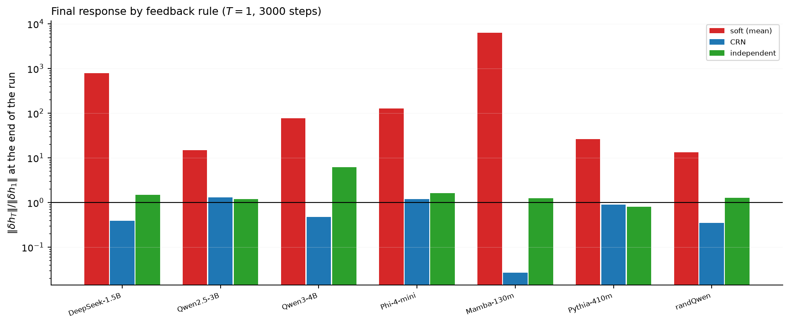
Fig. F5b — the same as end-of-run bars. Soft 13–6215×, CRN 0.03–1.3×, independent 0.8–6×. Note that independent sampling does separate rows somewhat (up to $\times6$ for Qwen3-4B) — ordinary sampled generation is not perfectly stable — but it is 2–3 orders of magnitude below the mean-feedback effect.
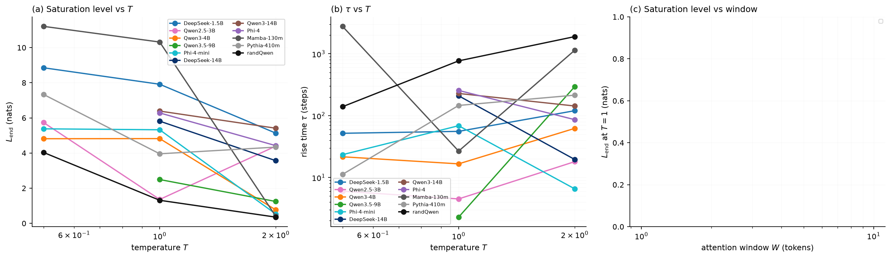
Fig. F6 — does $L_\infty$ or $\tau$ depend on $T$ or $W$? (a) $L_\infty$ vs $T$; (b) $\tau$ vs $T$; (c) $L_\infty$ vs attention window $W$ (from the W-sweep runs). Read: $L_\infty$ is roughly flat from $T=0.5$ to $1$ for most models but drops at $T=2$ for several (Phi-4-mini 5.3→0.6, Mamba 11.2→0.4, Qwen3-4B 4.8→1.1, randQwen 4.0→0.35), consistent with the gate strength $\sigma_{\max}\propto1/T$ at fixed margin. $\tau$ is not monotone in $T$. The window dependence is the weakest of the three (the prompt is 63 tokens; $W$ only matters after $t\gtrsim W$).
Correction to an earlier claim. The previous version said "any soft feedback gives the same gain; greed does not" (old F21). That was based on a tail statistic at 600 steps for one model. With matched pairs and a proper fit, the picture is: $T\to0$ gives $L=0$ (the loop becomes greedy and equals teacher forcing), and for $T\ge0.5$ the gain is model-dependent in $T$, with a clear decline at $T=2$ for about half the models. The DeepSeek-1.5B statement (8.9 / 7.8 / 6.0 nats at $T=0.5/1/2$) survives; the generalisation does not.
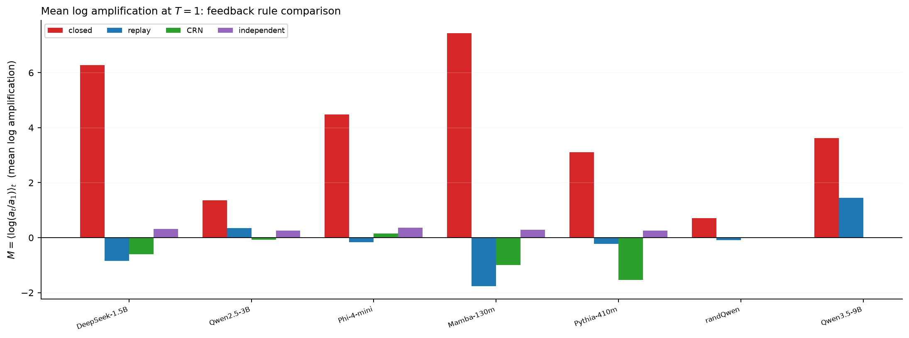
Fig. F7 — mean log amplification. $M=\langle\log(a_t/a_1)\rangle_t$ over the whole run, median over directions, at $T=1$; bars are closed loop, replay, CRN and independent. Data: results/softloop* / results/longloop*, 300-3000 steps. Read: the closed loop has $M=1$-$7$ nats; replay and CRN sit at 0 or below; independent sampling is near 0. It integrates the whole trajectory, so it does not depend on where the curve saturates, but it is still horizon-dependent.
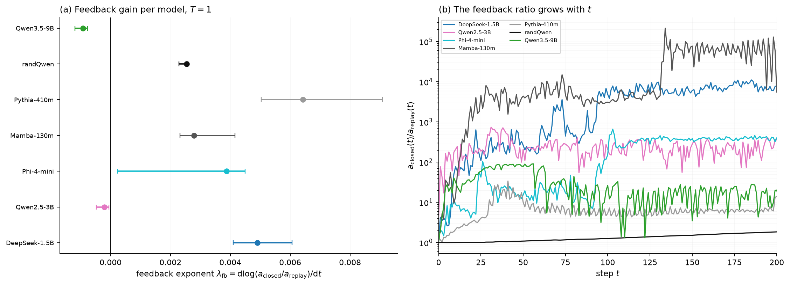
Fig. F7b — the feedback exponent. (a) $\lambda_{\rm fb}=\mathrm{d}\log(a_{\rm closed}/a_{\rm replay})/\mathrm{d}t$ per model at $T=1$ (median and IQR over directions). (b) The ratio $a_{\rm closed}/a_{\rm replay}$ vs $t$. Data: same orbit in both runs. Read: $\lambda_{\rm fb}=0.002$–$0.006$ nats/step for most models, negative for Qwen2.5/Qwen3.5; the ratio still grows because replay decays while the closed loop stays flat or grows. Interpretation: the loop instability is not a clean exponential; it is a staircase of gate events on top of a slowly growing ratio. This is why a single “Lyapunov exponent” is not the right summary.
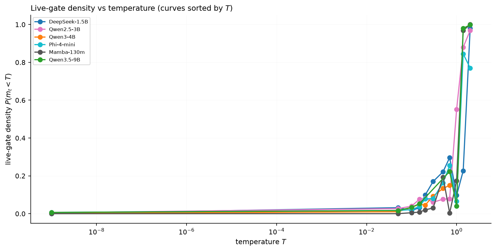
Fig. F8b — live-gate density across models. Density $P(m_tresults/softloop*, 300–600 steps, 8–32 directions, one orbit per $({\rm model},T)$. Read: the density is 0 below $T\approx0.2$ and $\approx1$ above $T\approx2$; the rise is at $T\approx1$ for trained models and at $T\approx0.13$ for the random control. Why the old panel (b) is deleted: horizon vs density does not collapse across models; the same density gives a 10× different horizon, and a two-parameter fit gives $R^2=0.20$. Density alone is not the order parameter.
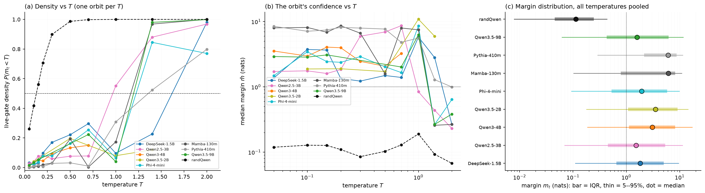
Fig. F8c — the gate density is a margin distribution. (a) $P(m_tpack_live_density_fit.json). The curve is also not monotone in $T$: each $T$ has its own orbit, and at some temperatures the loop locks into a confident repetition (large margins, low density). That is physics, not a plotting artefact, and it is why the density should not be treated as a thermodynamic curve.
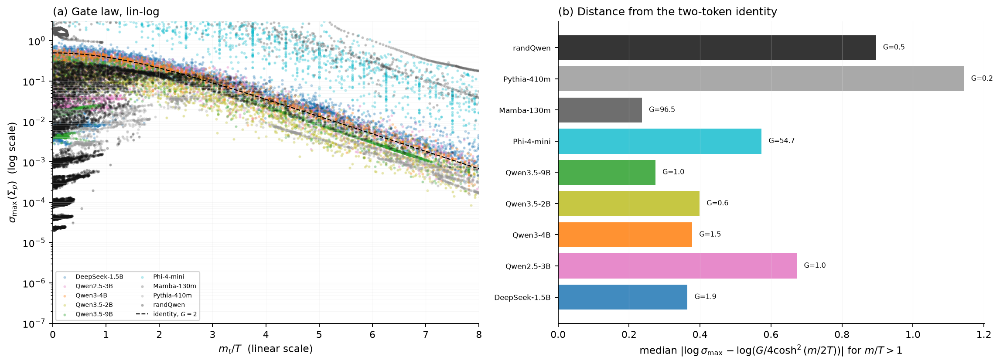
Fig. F9b — the same in lin–log. (a) Data in linear $m/T$ and log $\sigma$; the dashed curve is the identity with $G=2$. (b) Median distance from the identity for $m/T>1$. Read: DeepSeek/Qwen2.5/Qwen3.5/Phi-mini/Pythia/randQwen are below the identity at large $m/T$; Mamba and Qwen3-4B are closest. The identity is a conditional two-token model, not a universal curve; the robust measurement is the tail slope, not the amplitude.
Fig. F9d — per-model lin–log version. Same data and fits on linear $m/T$ axes. Read: the identity (red) is above the data for most models at large $m/T$; the tail slope (black) is the better description. For randQwen and Pythia the identity is visibly worse, consistent with a distribution that is not two-token.

Fig. F9 — gate law, log–log and slopes. (a) $\sigma_{\max}(\Sigma_p)$ against $m_t/T$ for all models, log–log; (b) fitted slope for $m_t/T>1$, with $G_{\rm eff}$ and $R^2$. Data: 4–11 temperatures per model, 8–32 directions. Read: slopes $-0.90$ to $-0.99$ for every trained model; the random control is $-0.83$ and Pythia $-0.90$, visibly off the identity. Trivial/not: the slope is the softmax identity; the measured content is the collapse and $G_{\rm eff}$.

Fig. F9c — per-model fit, including the random control. Data (dots), tail fit (black), identity curve $G/4\cosh^{-2}(m/2T)$ (red), and for randQwen the fit restricted to $m/T>3$ (red dashed). Read: the random control's tail fit is $-1.01$ with $R^2=0.99$; the earlier “the control breaks the law” came from fitting through the flat $m/T<1$ region. This is the fixed fit you asked for. The identity curve, not a straight line, is what matches the full range; it matches better for Mamba/Qwen3-4B than for DeepSeek/Qwen2.5.
Fig. F10 — pair geometry $G_t$. (a) Violin of $G_t=\|E_i-E_j\|\|W_i-W_j\|$ per model; (b) $G_t$ vs margin. Data: results/softloop_gates/*/gates.npz, 300 steps per orbit. Read: $G_t$ is a per-model constant to ±40%; Phi/Mamba are 25–100× larger; the random control is degenerate. Not trivial: the per-model constant is what makes Phi's gates strong.
Fig. F11 — network rate vs loop rate, per model. (a) $\lambda_{\rm net}$ (replay) per model: box = IQR, dots = temperatures; (b) $\lambda_{\rm sep}$ (closed loop). Data: all temperatures, 300–600 steps. Read: every $\lambda_{\rm net}$ is within about $\pm0.006$ and centred on 0; $\lambda_{\rm sep}$ is broad and often positive. Does this mean edge of chaos? No. A zero conditional rate means the network neither amplifies nor contracts along a fixed token stream; it is the signature of marginal stability, not criticality. An edge-of-chaos claim would also need (i) a positive but near-zero full Lyapunov exponent of the autonomous dynamics, (ii) scale-free correlations or avalanche statistics, and (iii) a diverging correlation length. We have (i) only in the weak “no positive exponent” sense, and we have not measured (ii)/(iii). The honest statement is: the token-conditioned network is neutral/contracting; the loop instability lives in the readout.

Fig. F12 — soft vs sampled feedback. Response for soft feedback (red), common-random-number sampling (blue dashed) and independent sampling (green dashed) at $T=1$, six models. Data: results/softloop_sample/*/{crn,ind}_T1.0; Qwen3-4B was generated in the new run. Read: soft grows; CRN is flat at 1; independent separates at step 0. Conclusion: the instability is deterministic mean feedback, not sampled generation.
Fig. F13 — readout rank and entropy. Box = IQR, white dot = median, dots = individual steps. (a) Effective rank of $\Sigma_p$ over its top-16 singular values; (b) entropy of $\mathrm{softmax}(z)$ at $T=1$. Data: sv_read/ent_ref in results/softloop*, 300–600 steps. Read: trained models rank 1.0–1.1, random control 15.7; entropy 0.3–1.0 nat for trained models, 11.6 for the random control ($\log V$). Caveat: ent_ref is at $T=1$; “entropy vs $T$” is not a temperature effect. Why box+strip: the violin was hiding the multi-modality; this shows the actual spread.

Fig. F15 — mean log amplification vs temperature. $M=\langle\log(a_t/a_1)\rangle_t$, closed loop (solid) and replay (dashed), per model. Data: results/softloop*, all temperatures, 600 steps. Read: closed $M$ is positive almost everywhere; replay is near zero or negative. The dependence on $T$ is orbit-specific, not monotonic; the robust statement is the closed/replay gap.
Fig. F16 — finite-scale growth rate (FSLE). For thresholds $S=2,4,8,16,32,64$, the first-passage time $t_S$ and the rate $\log S/t_S$, closed vs replay, at $T=1$. Data: same as F13. Read: the closed loop reaches larger $S$ in finite time; replay does not. The curves are not straight lines, so the growth is not a single exponential; the rate decreases with $S$ in several models.
Fig. F17 — the staircase. (a) One-step log increments $\Delta\log a_t$ for the closed loop, $T=1$; (b) autocorrelation of the increments. Read: the increments are spiky and correlated; growth happens in bursts at gates, not as a constant drift. This is the quantitative form of “staircase, not exponential”.
Fig. F18 — endpoint rates. Closed-loop endpoint rate vs replay endpoint rate, one point per model. Read: the points lie above the diagonal; the loop adds growth on top of whatever the network does. The absolute values are small, so this is a qualitative separation, consistent with F2/F2b.
Fig. F19 — finite-time exponent. $\Lambda(\tau)=\frac1\tau\log(a_{t+\tau}/a_t)$ vs $\tau$, closed (red) vs replay (blue), $T=1$. Data: results/softloop*, 600 steps. Read: the closed loop is positive at all $\tau$ for most models; replay is near zero or negative. The curves are not flat, so there is no single asymptotic exponent; the finite-time value is the meaningful object.
Fig. F20 — power spectrum of the log response. PSD of $\log a_t$ (quadratic trend removed), closed vs replay, $T=1$. Read: the closed loop has more low-frequency power (slow staircase), while replay is closer to a flat/noisy spectrum. Use: this is another way to show that the loop growth is a slow, structured process, not white noise.
Fig. F21 — the growth is bursty and gate-conditioned. (a) Windowed live-gate density $P(m_t<1)$ (window 50) — the gates open in bursts, and after the lock-in of F19 the density stays at 0. (b) Mean one-step log growth $\Delta\log a_t$, split by gate state: every trained model grows only while the gate is open (red, +0.02 to +0.15 nats/step) and contracts while it is closed (blue, −0.01 to −0.05 nats/step); Pythia is the extreme case (−0.5 nats/step when closed). (c) Concentration of the total log growth: the top 5% of steps produce 26–73% of the growth for the trained models (Phi-4-mini 73%), versus ~14% for randQwen and the 5% diagonal of a constant-rate exponential. Read: the staircase is not a plotting artefact; a handful of gate-opening events do most of the work, and between them the response decays.

Fig. G1 — precision and probe radius. (a) $\|\delta h_{50,L}\|$ vs $r$ for fp32 and fp16 runs of the same/nearby models; (b) local exponent $\beta={\rm d}\log\|\delta h\|/{\rm d}\log r$; (c) $r_*$ estimated at different probe radii. Read: fp16 has a constant floor (0.5–4) independent of $r$; fp32 scales with $\beta\to1$ for $r\lesssim10^{-2}$; $r_*$ is only stable at small probe radius. This is the figure that invalidates the old absolute comparisons. Data: new fp32 runs results/update/fp32_*, old fp16 runs a1r_*, DeepSeek 12-radius w100_layers.
Fig. G2 — sparse vs dense, corrected. Same as C4. Read: both are linear over 0.03–0.3; dense is a constant factor higher. My earlier statement “sparse saturates” was wrong: it came from the old fp16 sparse runs, not from the fp32 sparse runs. The correct consequence is that direction sparsity changes the scale of the response, and the old absolute values are only comparable within the same direction ensemble.

Fig. G3 — response vs radius, corrected. (a) Absolute response vs $r$ for the fp32 models; (b) local exponent; (c) superposition error vs total norm; (d) replication across prompts. Data: DeepSeek 12 radii, Qwen2.5/Qwen3.5 8 radii, superposition 3 prompts. Read: all three are linear from $3\times10^{-3}$ to 0.3 ($\beta\approx1$); below $10^{-3}$ the fp32 subtraction floor bends the curve. Superposition error is 5–7% at total norm 0.24.

Fig. G4 — superposition, all prompts. (a) $\|A-S\|/\|A\|$ vs total norm; (b) $\cos(A,S)$. Data: results/superposition/*, 65 positions, 2 trials, last layer. Read: error is 5–7% at the minimum (total norm 0.24), 36% at the fp32 subtraction floor; $\cos>0.997$. Trivial/not: the minimum is the measured linear-regime error; the rise at large norm is real saturation.
Fig. H1 — free-run flip fraction. Fraction of directions that flip at least one token, against $r$; band = Wilson 95%. Data: small models 3 prompts × 20 directions (results/local_data/models/*/chaos), DeepSeek 512 directions (results/hazard), 14B models 1000 directions (results_big/*/free_*). Read: Qwen3-4B/Qwen2.5/Phi-mini are 35–60% flat; DeepSeek rises from 3% to 60%; Phi-4 is near 0; 14B models rise. Caveat: the small-model runs use 20 directions and sparse perturbations, so the bands are wide; the ordering, not the exact value, is the result.
Fig. I1 — transport kernel. (a) $\log_{10}K(p,t)$ for the median over prompts; (b) rows $K(p,\cdot)$ at several prompt positions. Definition: $K(p,t)=\|\delta h_{t,L}\|/r$ when only prompt position $p$ is perturbed. Data: results/transport/deepseek_p*, 3–5 prompts, 8 directions, $r=0.1$, 300 tokens, last layer. Read: a persistent background from the first positions plus a travelling front at $t\approx p+20$–$40$. Model coverage: only DeepSeek has saved kernels; the 14B transport runs would need new data.
Fig. I2 — superposition (same as G4). The kernel is a valid decomposition at total norm 0.24 to 5–7%.
controls.md)These are the existing control figures; the scripts load the control .npz files (no synthetic arrays). They are the reason several old “LLM signatures” are not evidence.

Fig. J1 — Mamba carries the kick. Response $a(t)/r$ for Mamba-130m and DeepSeek-1.5B; median and 10–90% band. Read: Mamba does not decay to zero; it carries 0.2–0.9 for 300 tokens. The “attention carries the perturbation” statement is too strong; attention carries a ~3× larger response.

Fig. J2 — Mamba's rate fluctuates around zero. $\lambda_{10}(t)$ for the control and DeepSeek; transient positive excursions up to +0.11 in the control. Read: transient growth alone does not separate chaos from a contracting system.

Fig. J3 — the threshold rule is exact on the control. Observed vs predicted first flips, 18 free runs, 25/25 exact. Read: the flip phenomenology is a property of argmax, not of chaos.

Fig. J4 — no re-synchronisation. Token agreement after the first flip; 0/24 flipped runs re-synchronise. Read: “flux tube” phenomenology is reproduced by a system with all-negative Lyapunov exponents.

Fig. J5 — late rate across all models and controls. The LLM values sit inside the band of provably non-chaotic models.

Fig. J6 — Mamba has no travelling front. Kernel $K(p,t)$ for the control; front amplitude 1.0–1.2 vs 13–53 for DeepSeek. Read: long-lived influence is not attention-specific; re-amplification is.

Fig. J7 — random transformer gain sweep. Depth exponent vs weight gain and token-axis rate. Read: the depth axis can be made strongly amplifying while the token axis stays neutral; weight scale alone does not produce token-axis chaos.
Fig. J8 — thresholds across models. $r^*$ for random init, DeepSeek, Pythia, Mamba. Read: $r^*$ tracks the margin landscape, not the architecture.
Fig. J9 — correlation dimension across all models. Read: no model has a scaling region; the fitted $D_2$ spans 0.9–71 as a smooth function of the state-cloud dimension, with the contracting control at the low end. Use: this is the quantitative veto of the old D2 claims.
| result | status | why |
|---|---|---|
| No sustained growth (TF/replay) | keep | 9 architectures, finite-time exponent $\le0$ |
| Closed loop grows; replay/CRN flat | keep, feature | $M=1$–$7$ nats vs 0; F1–F2 |
| Window $t^*_1=p_{\rm last}+W-P$, $t^*_\ell=t^*_1+(\ell-1)(W-1)$ | keep, feature | exact over 106 windows; E1 |
| Depth: block-0 spike + small late rise | keep, qualify | block-0 share 2–85%; late rise 1.00–1.11; B1/B4c |
| Larger models closer to marginal | keep, qualify | 7 models, block-0 share varies |
| Gate law slope $-1$ | keep as identity | F4–F5; $G_{\rm eff}$ is the measurement |
| Gate identity amplitude universal | drop | data below identity for most models; F4b/F5b |
| Random control breaks gate law | drop | false; $-1.01$ for $m/T>3$ |
| Perpendicular response | drop as discovery | median 90° in LLMs and controls; C1 |
| Rotation 78–87° | keep, qualify | real, modest; random control 89°; C3 |
| $r_*$ ordering | keep only with dense directions | C5; sparse values are probe-dependent |
| $r_*$ log-logistic law | drop | KS rejects it; A1b |
| Five-regime taxonomy | drop | four of five claims fail |
| Entropy rises with $T$ | drop | ent_ref is at $T=1$ |
| Readout rank 1 | keep, qualify | F10; consequence of two-token concentration |
| Hunt–Ott entropy zero | drop | absolute exponents are positive; relative is small |
| Edge of chaos | do not claim | no positive full Lyapunov exponent, no criticality measurement |
| Sparse directions saturate (my earlier claim) | drop | both sparse and dense are linear over 0.03–0.3; C4 |
| Common linear regime all models | keep for fp32/dense; separate fp16 | C4/G1–G3 |
ent_ref is at $T=1$. F10.| # | experiment | status |
|---|---|---|
| 1 | fp32 A1 for Qwen2.5-3B, Qwen3.5-2B | done, results/update/fp32_* |
| 2 | fp32 A1 for Qwen3-4B, Phi-4-mini | not done; fp16 is adequate for flips/relative shape, fp32 needed only for absolute response |
| 3 | angle probe, 64 directions, 5 small models + 3 controls | done, results/update/angle_* |
| 4 | dense-direction $r_*$, 128 dirs, 3 fp32 small models | done, results/update/dense_* |
| 5 | dense 14B runs | Phi-4 done (results/update/dense14_phi4, $r_*=1.21$–$1.28$); Qwen3-14B/DS-14B hit OOM when colleagues held the memory, retried by queue_spark_wait.sh |
| 6 | DeepSeek dense window sweep, 106 windows | done (from existing wspec) |
| 7 | nonnorm controls | randQwen done (nonnorm_randqwen3); Pythia path mismatch; Mamba not run |
| 8 | depth probe with 32 directions | done for DeepSeek, Qwen2.5-3B, Phi-4-mini (results/update/depth_*_k32) |
| 9 | sampled feedback for Qwen3-4B (CRN/ind) | done, results/softloop_sample/qwen3_4b |
| 10 | exact $\Sigma_p$ validation (all vocab) | not run |
| 11 | attention mass, correct window mask | done, DeepSeek W=50/100/200/4096 + Qwen2.5/Phi/rand W=100 |
| 12 | closed-loop metric suite (M, FSLE, finite-time, spectrum, staircase, endpoint, saturation $L_\infty$/$\\tau$) | done, F2–F18 |
| 13 | log-logistic fit check (linear vs log space, KS) | done, A1b |
| 14 | variance/percentile pass on all aggregates | done where data allow; controls added to B5b/B6/C1/C2/C3/D1b/D3b |
| 15 | long looping campaign, 3000 steps (x11) / 1600 steps (Spark) | running: closed loop + replay at $T=1$, then $T=2$, CRN/ind, long teacher-forced (1000/800 tokens), then $T=0.5$ |
Running on the GPUs (36–48 h, started 2026‑11‑26 22:50 CET).
scripts/queue_long_x11.sh, log results/longloop_x11.log): 8 models (DeepSeek-1.5B, Qwen2.5-3B, Qwen3-4B, Qwen3.5-2B, Phi-4-mini, Mamba-130m, Pythia-410m, randQwen), 3000 steps, 4 saved layers, $r=0.03$–$0.1$, 8 directions. Rounds: (A) $T=1$ loop+replay for every model, (B) $T=2$ loop+replay, (C) CRN+independent sampling, (D) 1000-token teacher-forced, (E) $T=0.5$ loop+replay. ~15 min per 3000-step run for the 1.5B model, longer for the 3–4B models; the whole queue is ~30 h. Resume-safe: each step is skipped if its .npz exists.scripts/queue_long_spark.sh, log results/longloop_spark.log): Qwen3-14B, DeepSeek-14B, Qwen3.5-9B, Phi-4 at fp16, 1600 steps (≈3.4 s/step, ~2 h per run), 4 saved layers. Same round structure with 800-token teacher-forced runs. ~30 h total. I only killed my own earlier jobs; the colleagues' memory is untouched and the models load in fp16 (~30 GB), which fits in the free 60 GB.FAILED and the queue moves on, so nothing can spin.Re-running the analysis when the data land (all on the Windows checkout after analysis_update/sync_from_cluster.ps1):
python analysis_update/pack_loop_loglog_models.py # F0c-F0m: picks the longest orbit per model
python analysis_update/pack_loop_saturation.py # F0m summary numbers
python analysis_update/pack_loop_metrics.py # M, FSLE, staircase, endpoint
python analysis_update/pack_loop_finitetime.py # finite-time exponent + spectrum
python analysis_update/run_all.py # everything, then copy to notebook/update_figures
These were in the previous version of this document. They are kept because you asked not to remove figures; several are superseded by the newer versions above, and the caption says which. All are measured from the .npz files (not synthetic).
Earlier A — critical-radius density (the version you liked). Same data as A1. Kept as a standalone density figure.
Earlier B — entropy vs margin. Same data as F10. Kept because you liked it.
Earlier C — readout effective rank. Same data as F10; F10 is the box+strip version with more models.
Earlier D — the first depth figure. Shows the $1/\ell$ quantity that was fitted in unified.md; superseded by B1.
Earlier E — depth exponent vs model size. The single-scatter version; B1/B4b are the distribution versions.
Earlier F — the first gate-law figure. Superseded by F4/F4b/F5.
Earlier G — closed vs replay, DeepSeek only. Superseded by F1 (all models) and F2 (metric $M$).
Earlier H — relative response. Superseded by B5/B5b (controls added).
Earlier I — response vs radius. Superseded by G3.
Earlier J — phase figure. Superseded by F3b; the phase plot itself is deleted per your instruction.
Earlier K — window departure. Superseded by E1/E1b (exact formula).
Earlier L — angle/rotation. Superseded by C1/C2/C3 (controls added).
These were the loop figures in the last PDF. Every one of them is recomputed in place by the new scripts, so the numbers here are the older 600-step / 8-direction version. Kept because you asked not to delete figures; the live versions are F2-F21 above.
Old F0 — the four-panel summary (600 steps, DeepSeek-1.5B). Superseded by F2 (all models) and F5 (sampling).
Old F0b — log-log closed vs replay for one model. Superseded by F2/F2b.
Old F0c — the first all-models log-log grid. Superseded by F2, which uses per-direction ratios and matched pairs.
Old F0m — the saturation summary. The $L_\infty$/$\tau$ table in F2 is now computed per direction with the fixed-offset fit.
Old F21 — temperature threshold for one model. Superseded by F6, which shows the model dependence (the claim "any soft feedback gives the same gain" was too strong).
Old selfreg — self-regulation with green shading. Kept, but the shading was removed in F3 as you asked.